Serving: throughput, latency, speed per user
Qwen/Qwen3.5-9B on NVIDIA H100 PCIe (81,559 MiB, driver 580.196.07), SGLang c8ea707971 with 9 changed files. 3 servers, 12 load points. Baseline for the ratios: bf16 state + 16-token window (ratio = server ÷ baseline: above 1 is better for throughput and speed, below 1 for times and memory).
Every load point at a glance
The numbers public benchmarks lead with. Means over the repetitions where a point was run more than once (each repetition is in the full table at the end).
| Load point | Server | Output tokens/s | ÷ baseline | Speed per user, tokens/s | TTFT median, s | TTFT p99, s | TPOT median, ms | ITL p99, ms | E2E median, s | E2E p99, s | Peak GPU memory, GiB |
|---|---|---|---|---|---|---|---|---|---|---|---|
| 1,000/1,000 · 1 users | bf16 state + 16-token window | 91 | 91.4 | 0.05 | 0.06 | 10.9 | 11 | 11.0 | 11.0 | 67.0 | |
| 1,000/1,000 · 1 users | fp32 state (SGLang's default) | 95 | 1.041 | 95.2 | 0.05 | 0.05 | 10.5 | 11 | 10.5 | 10.5 | 64.5 |
| 1,000/1,000 · 1 users | LeapQuant (CUDA fold) | 87 | 0.957 | 87.5 | 0.05 | 0.05 | 11.4 | 12 | 11.5 | 11.5 | 64.8 |
| 1,000/1,000 · 4 users | bf16 state + 16-token window | 351 | 89.1 | 0.16 | 0.17 | 11.2 | 12 | 11.4 | 11.4 | 67.2 | |
| 1,000/1,000 · 4 users | fp32 state (SGLang's default) | 361 | 1.026 | 91.4 | 0.16 | 0.16 | 10.9 | 11 | 11.1 | 11.1 | 64.6 |
| 1,000/1,000 · 4 users | LeapQuant (CUDA fold) | 336 | 0.957 | 85.2 | 0.17 | 0.17 | 11.7 | 12 | 11.9 | 11.9 | 64.9 |
| 1,000/1,000 · 16 users | bf16 state + 16-token window | 1,239 | 79.7 | 0.39 | 0.65 | 12.5 | 13 | 12.9 | 12.9 | 67.7 | |
| 1,000/1,000 · 16 users | fp32 state (SGLang's default) | 1,228 | 0.991 | 78.9 | 0.36 | 0.62 | 12.7 | 13 | 13.0 | 13.0 | 64.8 |
| 1,000/1,000 · 16 users | LeapQuant (CUDA fold) | 1,202 | 0.970 | 77.3 | 0.36 | 0.62 | 12.9 | 14 | 13.3 | 13.3 | 65.2 |
| 1,000/1,000 · 64 users | bf16 state + 16-token window | 3,622 | 61.2 | 1.34 | 2.49 | 16.3 | 16 | 17.7 | 17.7 | 67.8 | |
| 1,000/1,000 · 64 users | fp32 state (SGLang's default) | 3,286 | 0.907 | 55.0 | 1.28 | 2.40 | 18.2 | 18 | 19.5 | 19.5 | 64.8 |
| 1,000/1,000 · 64 users | LeapQuant (CUDA fold) | 3,545 | 0.979 | 59.7 | 1.29 | 2.42 | 16.8 | 19 | 18.0 | 18.1 | 65.2 |
| 1,000/1,000 · 128 users | bf16 state + 16-token window | 5,284 | 46.3 | 2.57 | 4.94 | 21.6 | 22 | 24.2 | 24.2 | 67.8 | |
| 1,000/1,000 · 128 users | fp32 state (SGLang's default) | 4,513 | 0.854 | 38.7 | 2.50 | 4.72 | 25.8 | 25 | 28.3 | 28.4 | 64.8 |
| 1,000/1,000 · 128 users | LeapQuant (CUDA fold) | 5,264 | 0.996 | 45.9 | 2.52 | 4.78 | 21.8 | 27 | 24.3 | 24.3 | 65.2 |
| 1,000/1,000 · 256 users | bf16 state + 16-token window | 6,744 | 30.5 | 5.12 | 9.86 | 32.8 | 33 | 37.9 | 38.0 | 67.8 | |
| 1,000/1,000 · 256 users | fp32 state (SGLang's default) | 4,936 | 0.732 | 24.7 | 4.92 | 45.62 | 40.5 | 39 | 45.4 | 90.6 | 64.8 |
| 1,000/1,000 · 256 users | LeapQuant (CUDA fold) | 6,811 | 1.010 | 30.7 | 4.95 | 9.54 | 32.6 | 45 | 37.5 | 37.6 | 65.2 |
| 1,000/1,000 · 512 users | bf16 state + 16-token window | 6,555 | 17.4 | 10.10 | 69.13 | 57.4 | 59 | 67.4 | 134.7 | 67.8 | |
| 1,000/1,000 · 512 users | fp32 state (SGLang's default) | 5,197 | 0.793 | 24.7 | 49.00 | 91.21 | 40.5 | 39 | 90.7 | 136.1 | 64.8 |
| 1,000/1,000 · 512 users | LeapQuant (CUDA fold) | 6,701 | 1.022 | 16.8 | 9.70 | 69.42 | 59.4 | 82 | 69.0 | 137.9 | 65.2 |
| 8,192/1,024 · 1 users | bf16 state + 16-token window | 88 | 90.3 | 0.33 | 0.33 | 11.1 | 11 | 11.7 | 11.7 | 67.8 | |
| 8,192/1,024 · 1 users | fp32 state (SGLang's default) | 91 | 1.040 | 94.0 | 0.31 | 0.33 | 10.6 | 11 | 11.2 | 11.2 | 64.8 |
| 8,192/1,024 · 1 users | LeapQuant (CUDA fold) | 84 | 0.959 | 86.4 | 0.32 | 0.32 | 11.6 | 12 | 12.2 | 12.2 | 65.2 |
| 8,192/1,024 · 16 users | bf16 state + 16-token window | 814 | 59.0 | 2.77 | 5.21 | 17.0 | 15 | 20.1 | 20.2 | 67.7 | |
| 8,192/1,024 · 16 users | fp32 state (SGLang's default) | 814 | 1.000 | 58.7 | 2.69 | 5.06 | 17.0 | 15 | 20.1 | 20.1 | 64.8 |
| 8,192/1,024 · 16 users | LeapQuant (CUDA fold) | 802 | 0.985 | 57.7 | 2.70 | 5.09 | 17.3 | 16 | 20.4 | 20.4 | 65.1 |
| 8,192/1,024 · 64 users | bf16 state + 16-token window | 1,451 | 29.6 | 10.61 | 20.78 | 33.8 | 25 | 45.1 | 45.2 | 67.7 | |
| 8,192/1,024 · 64 users | fp32 state (SGLang's default) | 1,274 | 0.878 | 34.5 | 10.26 | 43.30 | 29.0 | 23 | 39.9 | 79.9 | 64.8 |
| 8,192/1,024 · 64 users | LeapQuant (CUDA fold) | 1,456 | 1.004 | 29.6 | 10.36 | 20.17 | 33.8 | 28 | 45.0 | 45.1 | 65.1 |
| 8,192/1,024 · 128 users | bf16 state + 16-token window | 1,555 | 24.0 | 21.27 | 72.71 | 41.7 | 32 | 63.9 | 127.8 | 67.7 | |
| 8,192/1,024 · 128 users | fp32 state (SGLang's default) | 1,343 | 0.864 | 33.2 | 51.33 | 86.75 | 30.1 | 24 | 80.0 | 120.0 | 64.8 |
| 8,192/1,024 · 128 users | LeapQuant (CUDA fold) | 1,562 | 1.005 | 21.7 | 20.49 | 73.63 | 46.1 | 40 | 67.6 | 135.2 | 65.1 |
| 8,192/1,024 · 256 users | bf16 state + 16-token window | 1,553 | 21.8 | 90.67 | 145.86 | 45.9 | 33 | 128.2 | 192.3 | 67.7 | |
| 8,192/1,024 · 256 users | fp32 state (SGLang's default) | 1,341 | 0.863 | 33.1 | 136.93 | 173.88 | 30.2 | 24 | 161.0 | 201.0 | 64.8 |
| 8,192/1,024 · 256 users | LeapQuant (CUDA fold) | 1,618 | 1.042 | 21.2 | 89.21 | 147.73 | 47.2 | 40 | 135.4 | 203.2 | 65.1 |
Charts
Output token throughput
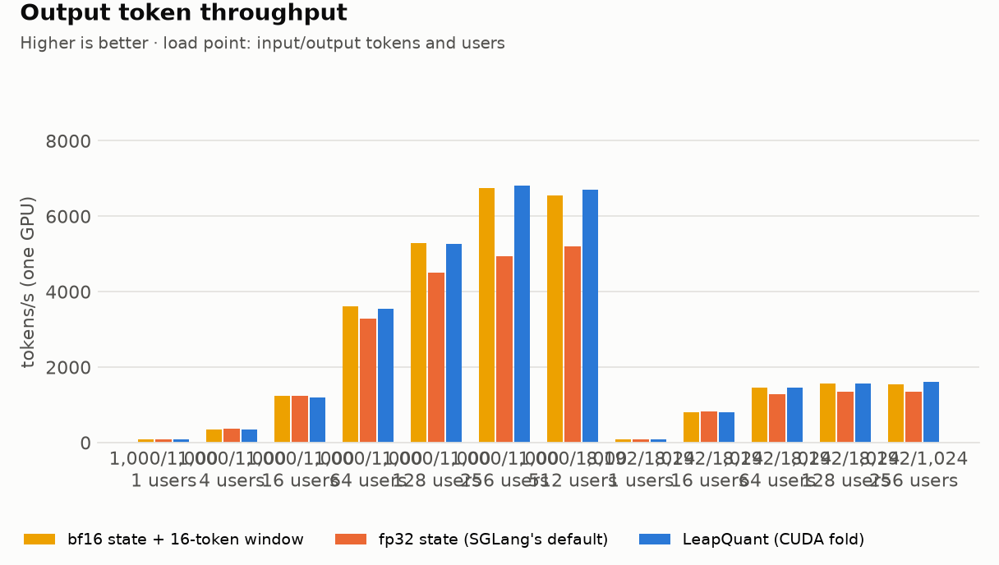
| Load point | bf16 state + 16-token window | fp32 state (SGLang's default) | LeapQuant (CUDA fold) |
|---|---|---|---|
| 1,000/1,000 · 1 users | 91 | 95 | 87 |
| 1,000/1,000 · 4 users | 351 | 361 | 336 |
| 1,000/1,000 · 16 users | 1,239 | 1,228 | 1,202 |
| 1,000/1,000 · 64 users | 3,622 | 3,286 | 3,545 |
| 1,000/1,000 · 128 users | 5,284 | 4,513 | 5,264 |
| 1,000/1,000 · 256 users | 6,744 | 4,936 | 6,811 |
| 1,000/1,000 · 512 users | 6,555 | 5,197 | 6,701 |
| 8,192/1,024 · 1 users | 88 | 91 | 84 |
| 8,192/1,024 · 16 users | 814 | 814 | 802 |
| 8,192/1,024 · 64 users | 1,451 | 1,274 | 1,456 |
| 8,192/1,024 · 128 users | 1,555 | 1,343 | 1,562 |
| 8,192/1,024 · 256 users | 1,553 | 1,341 | 1,618 |
Speed per user (interactivity), median
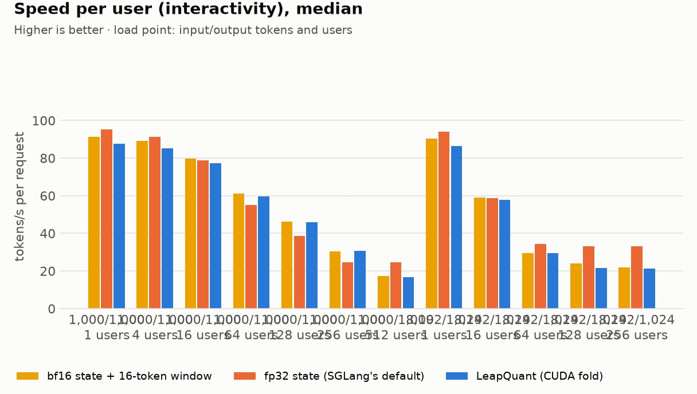
| Load point | bf16 state + 16-token window | fp32 state (SGLang's default) | LeapQuant (CUDA fold) |
|---|---|---|---|
| 1,000/1,000 · 1 users | 91.4 | 95.2 | 87.5 |
| 1,000/1,000 · 4 users | 89.1 | 91.4 | 85.2 |
| 1,000/1,000 · 16 users | 79.7 | 78.9 | 77.3 |
| 1,000/1,000 · 64 users | 61.2 | 55.0 | 59.7 |
| 1,000/1,000 · 128 users | 46.3 | 38.7 | 45.9 |
| 1,000/1,000 · 256 users | 30.5 | 24.7 | 30.7 |
| 1,000/1,000 · 512 users | 17.4 | 24.7 | 16.8 |
| 8,192/1,024 · 1 users | 90.3 | 94.0 | 86.4 |
| 8,192/1,024 · 16 users | 59.0 | 58.7 | 57.7 |
| 8,192/1,024 · 64 users | 29.6 | 34.5 | 29.6 |
| 8,192/1,024 · 128 users | 24.0 | 33.2 | 21.7 |
| 8,192/1,024 · 256 users | 21.8 | 33.1 | 21.2 |
Request throughput
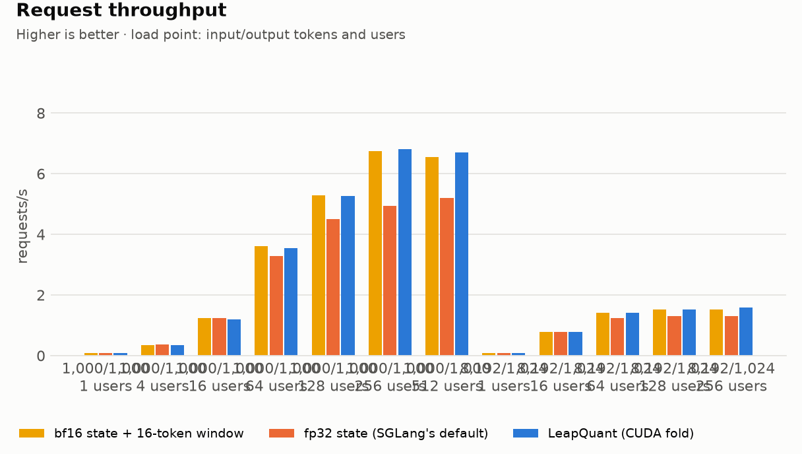
| Load point | bf16 state + 16-token window | fp32 state (SGLang's default) | LeapQuant (CUDA fold) |
|---|---|---|---|
| 1,000/1,000 · 1 users | 0.09 | 0.09 | 0.09 |
| 1,000/1,000 · 4 users | 0.35 | 0.36 | 0.34 |
| 1,000/1,000 · 16 users | 1.24 | 1.23 | 1.20 |
| 1,000/1,000 · 64 users | 3.62 | 3.29 | 3.54 |
| 1,000/1,000 · 128 users | 5.28 | 4.51 | 5.26 |
| 1,000/1,000 · 256 users | 6.74 | 4.94 | 6.81 |
| 1,000/1,000 · 512 users | 6.55 | 5.20 | 6.70 |
| 8,192/1,024 · 1 users | 0.09 | 0.09 | 0.08 |
| 8,192/1,024 · 16 users | 0.79 | 0.79 | 0.78 |
| 8,192/1,024 · 64 users | 1.42 | 1.24 | 1.42 |
| 8,192/1,024 · 128 users | 1.52 | 1.31 | 1.53 |
| 8,192/1,024 · 256 users | 1.52 | 1.31 | 1.58 |
Time to first token, median
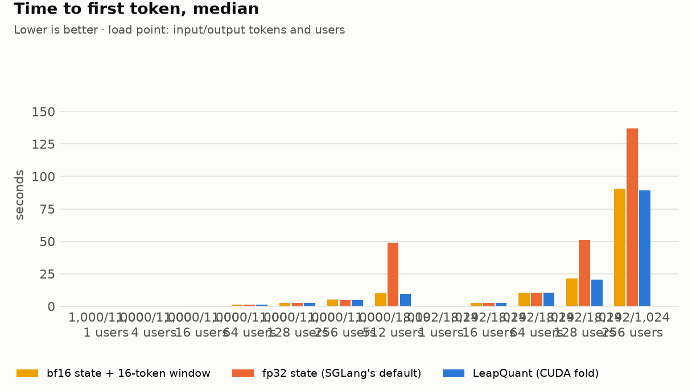
| Load point | bf16 state + 16-token window | fp32 state (SGLang's default) | LeapQuant (CUDA fold) |
|---|---|---|---|
| 1,000/1,000 · 1 users | 0.05 | 0.05 | 0.05 |
| 1,000/1,000 · 4 users | 0.16 | 0.16 | 0.17 |
| 1,000/1,000 · 16 users | 0.39 | 0.36 | 0.36 |
| 1,000/1,000 · 64 users | 1.34 | 1.28 | 1.29 |
| 1,000/1,000 · 128 users | 2.57 | 2.50 | 2.52 |
| 1,000/1,000 · 256 users | 5.12 | 4.92 | 4.95 |
| 1,000/1,000 · 512 users | 10.10 | 49.00 | 9.70 |
| 8,192/1,024 · 1 users | 0.33 | 0.31 | 0.32 |
| 8,192/1,024 · 16 users | 2.77 | 2.69 | 2.70 |
| 8,192/1,024 · 64 users | 10.61 | 10.26 | 10.36 |
| 8,192/1,024 · 128 users | 21.27 | 51.33 | 20.49 |
| 8,192/1,024 · 256 users | 90.67 | 136.93 | 89.21 |
Time to first token, p99
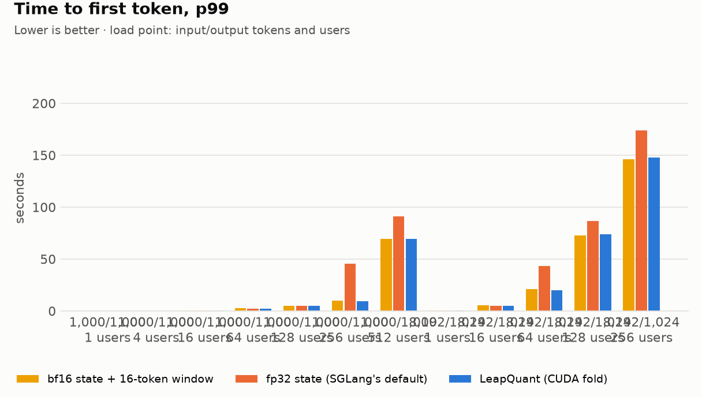
| Load point | bf16 state + 16-token window | fp32 state (SGLang's default) | LeapQuant (CUDA fold) |
|---|---|---|---|
| 1,000/1,000 · 1 users | 0.06 | 0.05 | 0.05 |
| 1,000/1,000 · 4 users | 0.17 | 0.16 | 0.17 |
| 1,000/1,000 · 16 users | 0.65 | 0.62 | 0.62 |
| 1,000/1,000 · 64 users | 2.49 | 2.40 | 2.42 |
| 1,000/1,000 · 128 users | 4.94 | 4.72 | 4.78 |
| 1,000/1,000 · 256 users | 9.86 | 45.62 | 9.54 |
| 1,000/1,000 · 512 users | 69.13 | 91.21 | 69.42 |
| 8,192/1,024 · 1 users | 0.33 | 0.33 | 0.32 |
| 8,192/1,024 · 16 users | 5.21 | 5.06 | 5.09 |
| 8,192/1,024 · 64 users | 20.78 | 43.30 | 20.17 |
| 8,192/1,024 · 128 users | 72.71 | 86.75 | 73.63 |
| 8,192/1,024 · 256 users | 145.86 | 173.88 | 147.73 |
Time between tokens, median
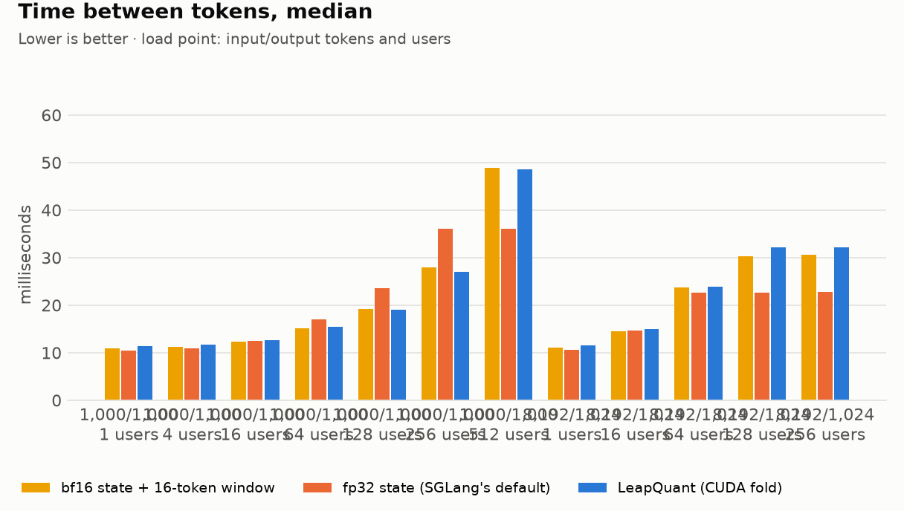
| Load point | bf16 state + 16-token window | fp32 state (SGLang's default) | LeapQuant (CUDA fold) |
|---|---|---|---|
| 1,000/1,000 · 1 users | 10.9 | 10.5 | 11.4 |
| 1,000/1,000 · 4 users | 11.2 | 10.9 | 11.7 |
| 1,000/1,000 · 16 users | 12.3 | 12.4 | 12.6 |
| 1,000/1,000 · 64 users | 15.1 | 17.1 | 15.4 |
| 1,000/1,000 · 128 users | 19.2 | 23.6 | 19.1 |
| 1,000/1,000 · 256 users | 27.9 | 36.1 | 27.0 |
| 1,000/1,000 · 512 users | 48.9 | 36.1 | 48.6 |
| 8,192/1,024 · 1 users | 11.1 | 10.6 | 11.6 |
| 8,192/1,024 · 16 users | 14.6 | 14.7 | 14.9 |
| 8,192/1,024 · 64 users | 23.7 | 22.6 | 23.9 |
| 8,192/1,024 · 128 users | 30.2 | 22.7 | 32.1 |
| 8,192/1,024 · 256 users | 30.5 | 22.8 | 32.2 |
Time between tokens, p99 (steps with a prefill or a fold)
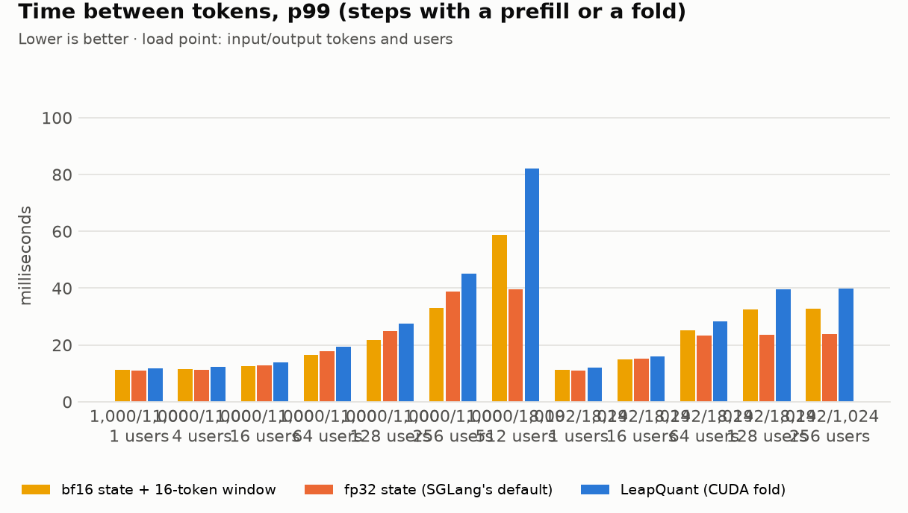
| Load point | bf16 state + 16-token window | fp32 state (SGLang's default) | LeapQuant (CUDA fold) |
|---|---|---|---|
| 1,000/1,000 · 1 users | 11 | 11 | 12 |
| 1,000/1,000 · 4 users | 12 | 11 | 12 |
| 1,000/1,000 · 16 users | 13 | 13 | 14 |
| 1,000/1,000 · 64 users | 16 | 18 | 19 |
| 1,000/1,000 · 128 users | 22 | 25 | 27 |
| 1,000/1,000 · 256 users | 33 | 39 | 45 |
| 1,000/1,000 · 512 users | 59 | 39 | 82 |
| 8,192/1,024 · 1 users | 11 | 11 | 12 |
| 8,192/1,024 · 16 users | 15 | 15 | 16 |
| 8,192/1,024 · 64 users | 25 | 23 | 28 |
| 8,192/1,024 · 128 users | 32 | 24 | 40 |
| 8,192/1,024 · 256 users | 33 | 24 | 40 |
End-to-end latency, median
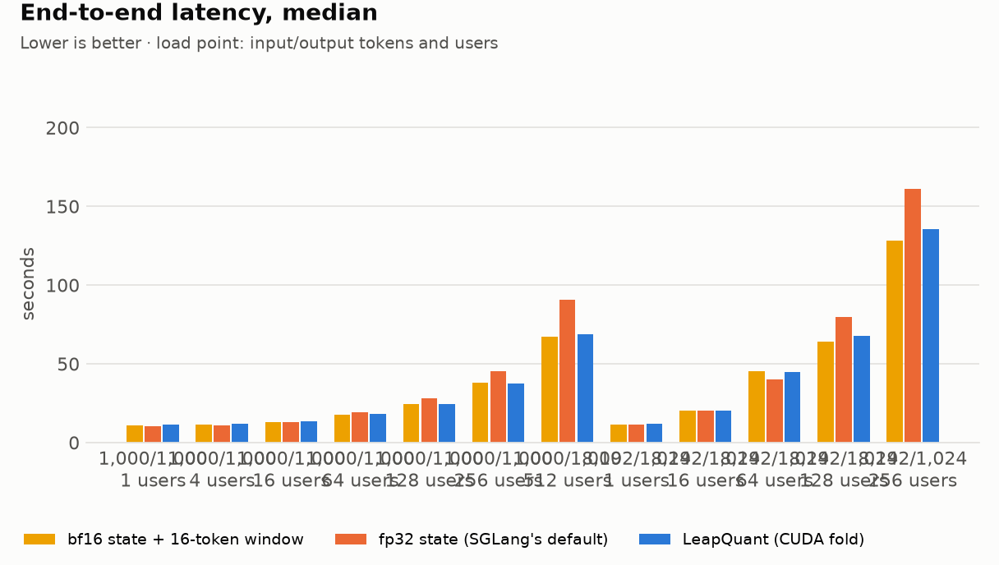
| Load point | bf16 state + 16-token window | fp32 state (SGLang's default) | LeapQuant (CUDA fold) |
|---|---|---|---|
| 1,000/1,000 · 1 users | 11.0 | 10.5 | 11.5 |
| 1,000/1,000 · 4 users | 11.4 | 11.1 | 11.9 |
| 1,000/1,000 · 16 users | 12.9 | 13.0 | 13.3 |
| 1,000/1,000 · 64 users | 17.7 | 19.5 | 18.0 |
| 1,000/1,000 · 128 users | 24.2 | 28.3 | 24.3 |
| 1,000/1,000 · 256 users | 37.9 | 45.4 | 37.5 |
| 1,000/1,000 · 512 users | 67.4 | 90.7 | 69.0 |
| 8,192/1,024 · 1 users | 11.7 | 11.2 | 12.2 |
| 8,192/1,024 · 16 users | 20.1 | 20.1 | 20.4 |
| 8,192/1,024 · 64 users | 45.1 | 39.9 | 45.0 |
| 8,192/1,024 · 128 users | 63.9 | 80.0 | 67.6 |
| 8,192/1,024 · 256 users | 128.2 | 161.0 | 135.4 |
End-to-end latency, p99
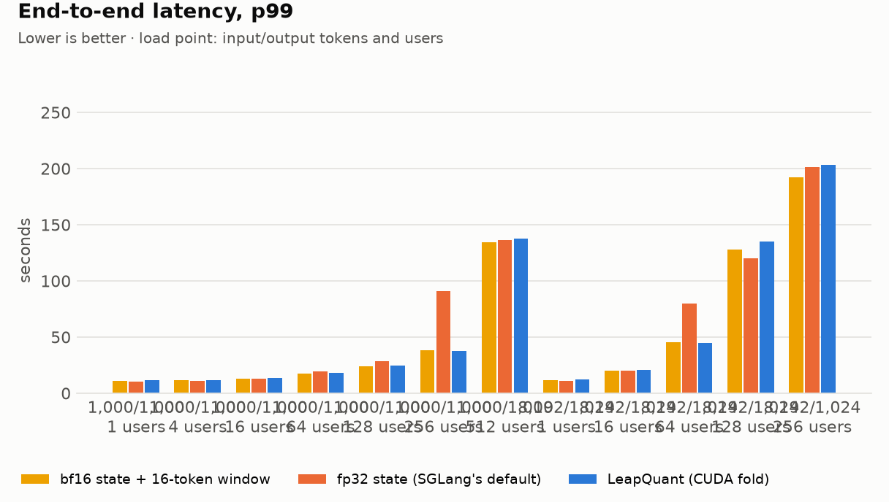
| Load point | bf16 state + 16-token window | fp32 state (SGLang's default) | LeapQuant (CUDA fold) |
|---|---|---|---|
| 1,000/1,000 · 1 users | 11.0 | 10.5 | 11.5 |
| 1,000/1,000 · 4 users | 11.4 | 11.1 | 11.9 |
| 1,000/1,000 · 16 users | 12.9 | 13.0 | 13.3 |
| 1,000/1,000 · 64 users | 17.7 | 19.5 | 18.1 |
| 1,000/1,000 · 128 users | 24.2 | 28.4 | 24.3 |
| 1,000/1,000 · 256 users | 38.0 | 90.6 | 37.6 |
| 1,000/1,000 · 512 users | 134.7 | 136.1 | 137.9 |
| 8,192/1,024 · 1 users | 11.7 | 11.2 | 12.2 |
| 8,192/1,024 · 16 users | 20.2 | 20.1 | 20.4 |
| 8,192/1,024 · 64 users | 45.2 | 79.9 | 45.1 |
| 8,192/1,024 · 128 users | 127.8 | 120.0 | 135.2 |
| 8,192/1,024 · 256 users | 192.3 | 201.0 | 203.2 |
Peak GPU memory during the point
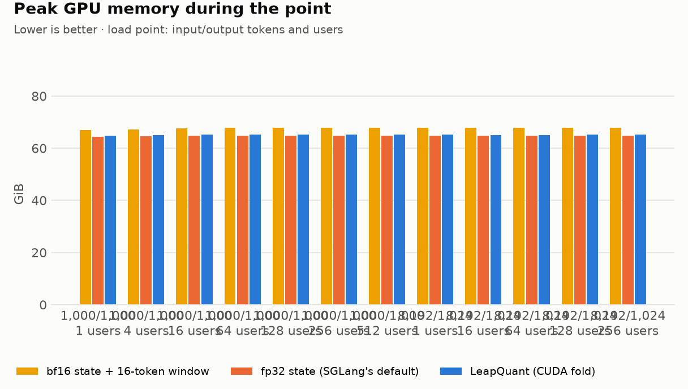
| Load point | bf16 state + 16-token window | fp32 state (SGLang's default) | LeapQuant (CUDA fold) |
|---|---|---|---|
| 1,000/1,000 · 1 users | 67.0 | 64.5 | 64.8 |
| 1,000/1,000 · 4 users | 67.2 | 64.6 | 64.9 |
| 1,000/1,000 · 16 users | 67.7 | 64.8 | 65.2 |
| 1,000/1,000 · 64 users | 67.8 | 64.8 | 65.2 |
| 1,000/1,000 · 128 users | 67.8 | 64.8 | 65.2 |
| 1,000/1,000 · 256 users | 67.8 | 64.8 | 65.2 |
| 1,000/1,000 · 512 users | 67.8 | 64.8 | 65.2 |
| 8,192/1,024 · 1 users | 67.8 | 64.8 | 65.2 |
| 8,192/1,024 · 16 users | 67.7 | 64.8 | 65.1 |
| 8,192/1,024 · 64 users | 67.7 | 64.8 | 65.1 |
| 8,192/1,024 · 128 users | 67.7 | 64.8 | 65.1 |
| 8,192/1,024 · 256 users | 67.7 | 64.8 | 65.1 |
Concurrency sweep: 1,000 in / 1,000 out, exact (Artificial Analysis's system load test shape)
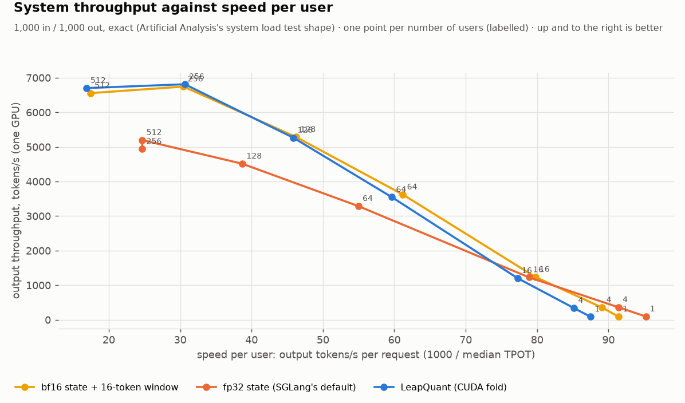
Concurrency sweep: 8,192 in / 1,024 out, exact (SemiAnalysis InferenceX's single-turn 8k/1k shape)
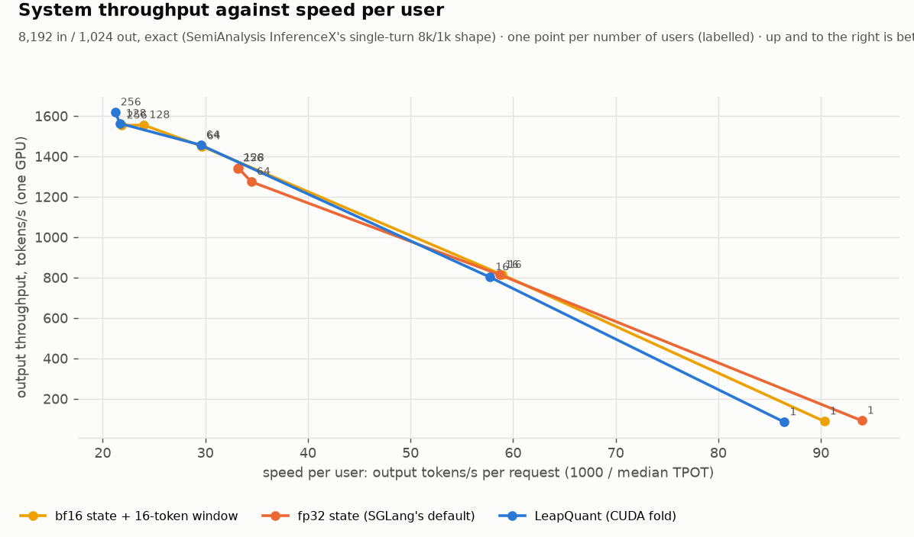
Every metric, per load point
All the numbers the benchmark client reports, grouped as public benchmark reports group them, with the ratio to the baseline.
1,000 in / 1,000 out, exact (Artificial Analysis's system load test shape) · 1 users
| Metric | bf16 state + 16-token window | fp32 state (SGLang's default) | LeapQuant (CUDA fold) | fp32 state (SGLang's default) ÷ bf16 state + 16-token window | LeapQuant (CUDA fold) ÷ bf16 state + 16-token window |
|---|---|---|---|---|---|
| Throughput (one GPU: also the figure per GPU) | |||||
| Output token throughput (tok/s) | 91 | 95 | 87 | 1.041 | 0.957 |
| Total token throughput (tok/s) | 182 | 190 | 174 | 1.041 | 0.957 |
| Input token throughput (tok/s) | 91 | 95 | 87 | 1.041 | 0.957 |
| Request throughput (req/s) | 0.09 | 0.09 | 0.09 | 1.000 | 1.000 |
| Peak output token throughput (tok/s) | 92 | 96 | 89 | 1.043 | 0.967 |
| Speed per user (interactivity) | |||||
| Speed per user, median (tok/s) | 91.4 | 95.2 | 87.5 | 1.042 | 0.957 |
| Speed per user, 90% of requests at least (tok/s) | 91.3 | 95.1 | 87.4 | 1.042 | 0.957 |
| Speed per user, 99% of requests at least (tok/s) | 91.2 | 95.1 | 87.4 | 1.044 | 0.959 |
| Time to first token | |||||
| Mean TTFT (ms) | 47 | 48 | 51 | 1.022 | 1.082 |
| Median TTFT (ms) | 46 | 49 | 52 | 1.045 | 1.111 |
| P90 TTFT (ms) | 50 | 50 | 53 | 1.003 | 1.060 |
| P95 TTFT (ms) | 53 | 50 | 53 | 0.944 | 1.004 |
| P99 TTFT (ms) | 55 | 50 | 53 | 0.902 | 0.963 |
| Time per output token (after the first) | |||||
| Mean TPOT (ms) | 10.9 | 10.5 | 11.4 | 0.960 | 1.045 |
| Median TPOT (ms) | 10.9 | 10.5 | 11.4 | 0.960 | 1.045 |
| P90 TPOT (ms) | 10.9 | 10.5 | 11.4 | 0.960 | 1.045 |
| P95 TPOT (ms) | 11.0 | 10.5 | 11.4 | 0.959 | 1.044 |
| P99 TPOT (ms) | 11.0 | 10.5 | 11.4 | 0.958 | 1.043 |
| Time between tokens | |||||
| Mean ITL (ms) | 10.9 | 10.5 | 11.4 | 0.960 | 1.045 |
| Median ITL (ms) | 10.9 | 10.5 | 11.4 | 0.960 | 1.044 |
| P90 ITL (ms) | 11.0 | 10.6 | 11.6 | 0.960 | 1.048 |
| P95 ITL (ms) | 11.1 | 10.6 | 11.7 | 0.960 | 1.053 |
| P99 ITL (ms) | 11.2 | 11.0 | 11.8 | 0.986 | 1.057 |
| Max ITL (ms) | 19 | 34 | 26 | 1.766 | 1.358 |
| End-to-end latency | |||||
| Mean E2E Latency (ms) | 10,976 | 10,540 | 11,471 | 0.960 | 1.045 |
| Median E2E Latency (ms) | 10,971 | 10,541 | 11,473 | 0.961 | 1.046 |
| P90 E2E Latency (ms) | 10,992 | 10,546 | 11,478 | 0.959 | 1.044 |
| P95 E2E Latency (ms) | 10,999 | 10,548 | 11,480 | 0.959 | 1.044 |
| P99 E2E Latency (ms) | 11,004 | 10,549 | 11,483 | 0.959 | 1.043 |
| Load, requests, tokens, memory | |||||
| Max request concurrency | 1 | 1 | 1 | ||
| Concurrency | 1.00 | 1.00 | 1.00 | ||
| Peak concurrent requests | 2 | 2 | 2 | ||
| Successful requests | 8 | 8 | 8 | ||
| Benchmark duration (s) | 87.8 | 84.3 | 91.8 | 0.960 | 1.045 |
| Total input tokens | 8,000 | 8,000 | 8,000 | ||
| Total generated tokens | 8,000 | 8,000 | 8,000 | ||
| Peak GPU memory (MiB) | 68,576 | 66,008 | 66,402 | 0.963 | 0.968 |
| Client settings | |||||
| Prompts | 8 | 8 | 8 | ||
| Input / output tokens | 1,000 / 1,000 exact | 1,000 / 1,000 exact | 1,000 / 1,000 exact | ||
| Arrival rate, requests/s | inf | inf | inf | ||
| Client concurrency limit | 1 | 1 | 1 | ||
| Output length forced (ignore EOS) | yes | yes | yes | ||
| Warm-up requests | 3 | 3 | 3 | ||
| Cache flushed before the point | yes | yes | yes | ||
| Temperature | 0.0 | 0.0 | 0.0 | ||
| Seed | 42 | 42 | 42 | ||
| Goodput SLO | - | - | - | ||
| Repetitions | 1 | 1 | 1 |
1,000 in / 1,000 out, exact (Artificial Analysis's system load test shape) · 4 users
| Metric | bf16 state + 16-token window | fp32 state (SGLang's default) | LeapQuant (CUDA fold) | fp32 state (SGLang's default) ÷ bf16 state + 16-token window | LeapQuant (CUDA fold) ÷ bf16 state + 16-token window |
|---|---|---|---|---|---|
| Throughput (one GPU: also the figure per GPU) | |||||
| Output token throughput (tok/s) | 351 | 361 | 336 | 1.026 | 0.957 |
| Total token throughput (tok/s) | 703 | 721 | 673 | 1.026 | 0.957 |
| Input token throughput (tok/s) | 351 | 361 | 336 | 1.026 | 0.957 |
| Request throughput (req/s) | 0.35 | 0.36 | 0.34 | 1.029 | 0.971 |
| Peak output token throughput (tok/s) | 360 | 368 | 344 | 1.022 | 0.956 |
| Speed per user (interactivity) | |||||
| Speed per user, median (tok/s) | 89.1 | 91.4 | 85.2 | 1.026 | 0.956 |
| Speed per user, 90% of requests at least (tok/s) | 88.2 | 90.5 | 84.5 | 1.026 | 0.958 |
| Speed per user, 99% of requests at least (tok/s) | 88.2 | 90.5 | 84.3 | 1.026 | 0.956 |
| Time to first token | |||||
| Mean TTFT (ms) | 136 | 132 | 137 | 0.974 | 1.011 |
| Median TTFT (ms) | 164 | 160 | 165 | 0.972 | 1.005 |
| P90 TTFT (ms) | 167 | 161 | 167 | 0.966 | 1.003 |
| P95 TTFT (ms) | 167 | 161 | 167 | 0.966 | 1.003 |
| P99 TTFT (ms) | 167 | 161 | 167 | 0.966 | 1.003 |
| Time per output token (after the first) | |||||
| Mean TPOT (ms) | 11.2 | 11.0 | 11.8 | 0.975 | 1.045 |
| Median TPOT (ms) | 11.2 | 10.9 | 11.7 | 0.975 | 1.046 |
| P90 TPOT (ms) | 11.3 | 11.1 | 11.8 | 0.974 | 1.044 |
| P95 TPOT (ms) | 11.3 | 11.1 | 11.8 | 0.974 | 1.045 |
| P99 TPOT (ms) | 11.3 | 11.1 | 11.9 | 0.974 | 1.046 |
| Time between tokens | |||||
| Mean ITL (ms) | 11.2 | 11.0 | 11.8 | 0.975 | 1.045 |
| Median ITL (ms) | 11.2 | 10.9 | 11.7 | 0.975 | 1.044 |
| P90 ITL (ms) | 11.3 | 11.0 | 11.9 | 0.972 | 1.047 |
| P95 ITL (ms) | 11.4 | 11.1 | 12.1 | 0.971 | 1.059 |
| P99 ITL (ms) | 11.5 | 11.2 | 12.2 | 0.977 | 1.059 |
| Max ITL (ms) | 131 | 125 | 128 | 0.951 | 0.979 |
| End-to-end latency | |||||
| Mean E2E Latency (ms) | 11,376 | 11,087 | 11,882 | 0.975 | 1.044 |
| Median E2E Latency (ms) | 11,376 | 11,087 | 11,882 | 0.975 | 1.044 |
| P90 E2E Latency (ms) | 11,377 | 11,092 | 11,897 | 0.975 | 1.046 |
| P95 E2E Latency (ms) | 11,377 | 11,092 | 11,897 | 0.975 | 1.046 |
| P99 E2E Latency (ms) | 11,377 | 11,092 | 11,897 | 0.975 | 1.046 |
| Load, requests, tokens, memory | |||||
| Max request concurrency | 4 | 4 | 4 | ||
| Concurrency | 4.00 | 4.00 | 4.00 | ||
| Peak concurrent requests | 8 | 8 | 8 | ||
| Successful requests | 8 | 8 | 8 | ||
| Benchmark duration (s) | 22.8 | 22.2 | 23.8 | 0.975 | 1.044 |
| Total input tokens | 8,000 | 8,000 | 8,000 | ||
| Total generated tokens | 8,000 | 8,000 | 8,000 | ||
| Peak GPU memory (MiB) | 68,788 | 66,102 | 66,496 | 0.961 | 0.967 |
| Client settings | |||||
| Prompts | 8 | 8 | 8 | ||
| Input / output tokens | 1,000 / 1,000 exact | 1,000 / 1,000 exact | 1,000 / 1,000 exact | ||
| Arrival rate, requests/s | inf | inf | inf | ||
| Client concurrency limit | 4 | 4 | 4 | ||
| Output length forced (ignore EOS) | yes | yes | yes | ||
| Warm-up requests | 3 | 3 | 3 | ||
| Cache flushed before the point | yes | yes | yes | ||
| Temperature | 0.0 | 0.0 | 0.0 | ||
| Seed | 42 | 42 | 42 | ||
| Goodput SLO | - | - | - | ||
| Repetitions | 1 | 1 | 1 |
1,000 in / 1,000 out, exact (Artificial Analysis's system load test shape) · 16 users
| Metric | bf16 state + 16-token window | fp32 state (SGLang's default) | LeapQuant (CUDA fold) | fp32 state (SGLang's default) ÷ bf16 state + 16-token window | LeapQuant (CUDA fold) ÷ bf16 state + 16-token window |
|---|---|---|---|---|---|
| Throughput (one GPU: also the figure per GPU) | |||||
| Output token throughput (tok/s) | 1,239 | 1,228 | 1,202 | 0.991 | 0.970 |
| Total token throughput (tok/s) | 2,478 | 2,455 | 2,404 | 0.991 | 0.970 |
| Input token throughput (tok/s) | 1,239 | 1,228 | 1,202 | 0.991 | 0.970 |
| Request throughput (req/s) | 1.24 | 1.23 | 1.20 | 0.992 | 0.968 |
| Peak output token throughput (tok/s) | 1,328 | 1,312 | 1,280 | 0.988 | 0.964 |
| Speed per user (interactivity) | |||||
| Speed per user, median (tok/s) | 79.7 | 78.9 | 77.3 | 0.989 | 0.969 |
| Speed per user, 90% of requests at least (tok/s) | 79.7 | 78.8 | 77.1 | 0.989 | 0.968 |
| Speed per user, 99% of requests at least (tok/s) | 77.7 | 77.0 | 75.4 | 0.991 | 0.970 |
| Time to first token | |||||
| Mean TTFT (ms) | 466 | 443 | 452 | 0.951 | 0.972 |
| Median TTFT (ms) | 385 | 361 | 365 | 0.938 | 0.947 |
| P90 TTFT (ms) | 651 | 618 | 622 | 0.948 | 0.955 |
| P95 TTFT (ms) | 652 | 618 | 622 | 0.948 | 0.955 |
| P99 TTFT (ms) | 652 | 618 | 622 | 0.948 | 0.955 |
| Time per output token (after the first) | |||||
| Mean TPOT (ms) | 12.4 | 12.6 | 12.9 | 1.011 | 1.033 |
| Median TPOT (ms) | 12.5 | 12.7 | 12.9 | 1.011 | 1.032 |
| P90 TPOT (ms) | 12.6 | 12.7 | 13.0 | 1.011 | 1.033 |
| P95 TPOT (ms) | 12.7 | 12.8 | 13.1 | 1.011 | 1.032 |
| P99 TPOT (ms) | 12.9 | 13.0 | 13.3 | 1.009 | 1.031 |
| Time between tokens | |||||
| Mean ITL (ms) | 12.4 | 12.6 | 12.9 | 1.011 | 1.033 |
| Median ITL (ms) | 12.3 | 12.4 | 12.6 | 1.013 | 1.030 |
| P90 ITL (ms) | 12.5 | 12.6 | 12.9 | 1.009 | 1.033 |
| P95 ITL (ms) | 12.6 | 12.6 | 13.6 | 1.006 | 1.081 |
| P99 ITL (ms) | 12.7 | 12.8 | 13.8 | 1.012 | 1.090 |
| Max ITL (ms) | 618 | 588 | 588 | 0.951 | 0.952 |
| End-to-end latency | |||||
| Mean E2E Latency (ms) | 12,902 | 13,022 | 13,303 | 1.009 | 1.031 |
| Median E2E Latency (ms) | 12,902 | 13,022 | 13,303 | 1.009 | 1.031 |
| P90 E2E Latency (ms) | 12,920 | 13,038 | 13,322 | 1.009 | 1.031 |
| P95 E2E Latency (ms) | 12,921 | 13,038 | 13,323 | 1.009 | 1.031 |
| P99 E2E Latency (ms) | 12,921 | 13,039 | 13,323 | 1.009 | 1.031 |
| Load, requests, tokens, memory | |||||
| Max request concurrency | 16 | 16 | 16 | ||
| Concurrency | 15.99 | 15.99 | 15.99 | ||
| Peak concurrent requests | 32 | 32 | 32 | ||
| Successful requests | 32 | 32 | 32 | ||
| Benchmark duration (s) | 25.8 | 26.1 | 26.6 | 1.009 | 1.031 |
| Total input tokens | 32,000 | 32,000 | 32,000 | ||
| Total generated tokens | 32,000 | 32,000 | 32,000 | ||
| Peak GPU memory (MiB) | 69,316 | 66,372 | 66,762 | 0.958 | 0.963 |
| Client settings | |||||
| Prompts | 32 | 32 | 32 | ||
| Input / output tokens | 1,000 / 1,000 exact | 1,000 / 1,000 exact | 1,000 / 1,000 exact | ||
| Arrival rate, requests/s | inf | inf | inf | ||
| Client concurrency limit | 16 | 16 | 16 | ||
| Output length forced (ignore EOS) | yes | yes | yes | ||
| Warm-up requests | 3 | 3 | 3 | ||
| Cache flushed before the point | yes | yes | yes | ||
| Temperature | 0.0 | 0.0 | 0.0 | ||
| Seed | 42 | 42 | 42 | ||
| Goodput SLO | - | - | - | ||
| Repetitions | 1 | 1 | 1 |
1,000 in / 1,000 out, exact (Artificial Analysis's system load test shape) · 64 users
| Metric | bf16 state + 16-token window | fp32 state (SGLang's default) | LeapQuant (CUDA fold) | fp32 state (SGLang's default) ÷ bf16 state + 16-token window | LeapQuant (CUDA fold) ÷ bf16 state + 16-token window |
|---|---|---|---|---|---|
| Throughput (one GPU: also the figure per GPU) | |||||
| Output token throughput (tok/s) | 3,622 | 3,286 | 3,545 | 0.907 | 0.979 |
| Total token throughput (tok/s) | 7,244 | 6,573 | 7,090 | 0.907 | 0.979 |
| Input token throughput (tok/s) | 3,622 | 3,286 | 3,545 | 0.907 | 0.979 |
| Request throughput (req/s) | 3.62 | 3.29 | 3.54 | 0.909 | 0.978 |
| Peak output token throughput (tok/s) | 4,356 | 3,904 | 4,264 | 0.896 | 0.979 |
| Speed per user (interactivity) | |||||
| Speed per user, median (tok/s) | 61.2 | 55.0 | 59.7 | 0.898 | 0.975 |
| Speed per user, 90% of requests at least (tok/s) | 57.8 | 52.4 | 56.6 | 0.905 | 0.978 |
| Speed per user, 99% of requests at least (tok/s) | 57.2 | 51.8 | 56.0 | 0.906 | 0.979 |
| Time to first token | |||||
| Mean TTFT (ms) | 1,411 | 1,355 | 1,372 | 0.960 | 0.972 |
| Median TTFT (ms) | 1,338 | 1,285 | 1,292 | 0.960 | 0.966 |
| P90 TTFT (ms) | 2,268 | 2,192 | 2,203 | 0.966 | 0.971 |
| P95 TTFT (ms) | 2,468 | 2,357 | 2,401 | 0.955 | 0.973 |
| P99 TTFT (ms) | 2,486 | 2,402 | 2,419 | 0.966 | 0.973 |
| Time per output token (after the first) | |||||
| Mean TPOT (ms) | 16.3 | 18.1 | 16.7 | 1.114 | 1.026 |
| Median TPOT (ms) | 16.3 | 18.2 | 16.8 | 1.113 | 1.026 |
| P90 TPOT (ms) | 17.3 | 19.1 | 17.7 | 1.105 | 1.023 |
| P95 TPOT (ms) | 17.3 | 19.1 | 17.7 | 1.106 | 1.023 |
| P99 TPOT (ms) | 17.5 | 19.3 | 17.9 | 1.104 | 1.022 |
| Time between tokens | |||||
| Mean ITL (ms) | 16.3 | 18.1 | 16.7 | 1.114 | 1.026 |
| Median ITL (ms) | 15.1 | 17.1 | 15.4 | 1.127 | 1.020 |
| P90 ITL (ms) | 15.7 | 17.6 | 16.0 | 1.120 | 1.020 |
| P95 ITL (ms) | 15.9 | 17.6 | 18.5 | 1.112 | 1.167 |
| P99 ITL (ms) | 16.5 | 17.9 | 19.3 | 1.083 | 1.172 |
| Max ITL (ms) | 2,442 | 2,333 | 2,369 | 0.955 | 0.970 |
| End-to-end latency | |||||
| Mean E2E Latency (ms) | 17,652 | 19,456 | 18,034 | 1.102 | 1.022 |
| Median E2E Latency (ms) | 17,654 | 19,458 | 18,035 | 1.102 | 1.022 |
| P90 E2E Latency (ms) | 17,672 | 19,494 | 18,058 | 1.103 | 1.022 |
| P95 E2E Latency (ms) | 17,674 | 19,495 | 18,059 | 1.103 | 1.022 |
| P99 E2E Latency (ms) | 17,674 | 19,495 | 18,059 | 1.103 | 1.022 |
| Load, requests, tokens, memory | |||||
| Max request concurrency | 64 | 64 | 64 | ||
| Concurrency | 63.93 | 63.94 | 63.93 | ||
| Peak concurrent requests | 128 | 128 | 128 | ||
| Successful requests | 128 | 128 | 128 | ||
| Benchmark duration (s) | 35.3 | 39.0 | 36.1 | 1.102 | 1.022 |
| Total input tokens | 128,000 | 128,000 | 128,000 | ||
| Total generated tokens | 128,000 | 128,000 | 128,000 | ||
| Peak GPU memory (MiB) | 69,450 | 66,372 | 66,798 | 0.956 | 0.962 |
| Client settings | |||||
| Prompts | 128 | 128 | 128 | ||
| Input / output tokens | 1,000 / 1,000 exact | 1,000 / 1,000 exact | 1,000 / 1,000 exact | ||
| Arrival rate, requests/s | inf | inf | inf | ||
| Client concurrency limit | 64 | 64 | 64 | ||
| Output length forced (ignore EOS) | yes | yes | yes | ||
| Warm-up requests | 3 | 3 | 3 | ||
| Cache flushed before the point | yes | yes | yes | ||
| Temperature | 0.0 | 0.0 | 0.0 | ||
| Seed | 42 | 42 | 42 | ||
| Goodput SLO | - | - | - | ||
| Repetitions | 1 | 1 | 1 |
1,000 in / 1,000 out, exact (Artificial Analysis's system load test shape) · 128 users
| Metric | bf16 state + 16-token window | fp32 state (SGLang's default) | LeapQuant (CUDA fold) | fp32 state (SGLang's default) ÷ bf16 state + 16-token window | LeapQuant (CUDA fold) ÷ bf16 state + 16-token window |
|---|---|---|---|---|---|
| Throughput (one GPU: also the figure per GPU) | |||||
| Output token throughput (tok/s) | 5,284 | 4,513 | 5,264 | 0.854 | 0.996 |
| Total token throughput (tok/s) | 10,568 | 9,026 | 10,527 | 0.854 | 0.996 |
| Input token throughput (tok/s) | 5,284 | 4,513 | 5,264 | 0.854 | 0.996 |
| Request throughput (req/s) | 5.28 | 4.51 | 5.26 | 0.854 | 0.996 |
| Peak output token throughput (tok/s) | 7,088 | 5,760 | 6,928 | 0.813 | 0.977 |
| Speed per user (interactivity) | |||||
| Speed per user, median (tok/s) | 46.3 | 38.7 | 45.9 | 0.837 | 0.992 |
| Speed per user, 90% of requests at least (tok/s) | 42.5 | 36.1 | 42.3 | 0.850 | 0.995 |
| Speed per user, 99% of requests at least (tok/s) | 41.8 | 35.7 | 41.7 | 0.852 | 0.997 |
| Time to first token | |||||
| Mean TTFT (ms) | 2,638 | 2,540 | 2,562 | 0.963 | 0.971 |
| Median TTFT (ms) | 2,574 | 2,498 | 2,523 | 0.971 | 0.980 |
| P90 TTFT (ms) | 4,466 | 4,295 | 4,338 | 0.962 | 0.971 |
| P95 TTFT (ms) | 4,780 | 4,586 | 4,637 | 0.959 | 0.970 |
| P99 TTFT (ms) | 4,936 | 4,719 | 4,776 | 0.956 | 0.968 |
| Time per output token (after the first) | |||||
| Mean TPOT (ms) | 21.6 | 25.8 | 21.8 | 1.196 | 1.008 |
| Median TPOT (ms) | 21.6 | 25.8 | 21.8 | 1.195 | 1.008 |
| P90 TPOT (ms) | 23.5 | 27.7 | 23.6 | 1.177 | 1.005 |
| P95 TPOT (ms) | 23.8 | 28.0 | 23.9 | 1.174 | 1.006 |
| P99 TPOT (ms) | 23.9 | 28.0 | 24.0 | 1.173 | 1.003 |
| Time between tokens | |||||
| Mean ITL (ms) | 21.6 | 25.8 | 21.8 | 1.196 | 1.008 |
| Median ITL (ms) | 19.2 | 23.6 | 19.1 | 1.227 | 0.994 |
| P90 ITL (ms) | 20.2 | 24.5 | 20.2 | 1.213 | 1.000 |
| P95 ITL (ms) | 20.5 | 24.6 | 25.8 | 1.201 | 1.255 |
| P99 ITL (ms) | 21.8 | 24.8 | 27.4 | 1.141 | 1.259 |
| Max ITL (ms) | 4,933 | 4,722 | 4,754 | 0.957 | 0.964 |
| End-to-end latency | |||||
| Mean E2E Latency (ms) | 24,195 | 28,332 | 24,291 | 1.171 | 1.004 |
| Median E2E Latency (ms) | 24,195 | 28,333 | 24,296 | 1.171 | 1.004 |
| P90 E2E Latency (ms) | 24,228 | 28,359 | 24,314 | 1.171 | 1.004 |
| P95 E2E Latency (ms) | 24,234 | 28,363 | 24,316 | 1.170 | 1.003 |
| P99 E2E Latency (ms) | 24,238 | 28,366 | 24,316 | 1.170 | 1.003 |
| Load, requests, tokens, memory | |||||
| Max request concurrency | 128 | 128 | 128 | ||
| Concurrency | 127.85 | 127.87 | 127.86 | ||
| Peak concurrent requests | 256 | 256 | 256 | ||
| Successful requests | 256 | 256 | 256 | ||
| Benchmark duration (s) | 48.5 | 56.7 | 48.6 | 1.171 | 1.004 |
| Total input tokens | 256,000 | 256,000 | 256,000 | ||
| Total generated tokens | 256,000 | 256,000 | 256,000 | ||
| Peak GPU memory (MiB) | 69,450 | 66,344 | 66,798 | 0.955 | 0.962 |
| Client settings | |||||
| Prompts | 256 | 256 | 256 | ||
| Input / output tokens | 1,000 / 1,000 exact | 1,000 / 1,000 exact | 1,000 / 1,000 exact | ||
| Arrival rate, requests/s | inf | inf | inf | ||
| Client concurrency limit | 128 | 128 | 128 | ||
| Output length forced (ignore EOS) | yes | yes | yes | ||
| Warm-up requests | 3 | 3 | 3 | ||
| Cache flushed before the point | yes | yes | yes | ||
| Temperature | 0.0 | 0.0 | 0.0 | ||
| Seed | 42 | 42 | 42 | ||
| Goodput SLO | - | - | - | ||
| Repetitions | 1 | 1 | 1 |
1,000 in / 1,000 out, exact (Artificial Analysis's system load test shape) · 256 users
| Metric | bf16 state + 16-token window | fp32 state (SGLang's default) | LeapQuant (CUDA fold) | fp32 state (SGLang's default) ÷ bf16 state + 16-token window | LeapQuant (CUDA fold) ÷ bf16 state + 16-token window |
|---|---|---|---|---|---|
| Throughput (one GPU: also the figure per GPU) | |||||
| Output token throughput (tok/s) | 6,744 | 4,936 | 6,811 | 0.732 | 1.010 |
| Total token throughput (tok/s) | 13,487 | 9,873 | 13,623 | 0.732 | 1.010 |
| Input token throughput (tok/s) | 6,744 | 4,936 | 6,811 | 0.732 | 1.010 |
| Request throughput (req/s) | 6.74 | 4.94 | 6.81 | 0.733 | 1.010 |
| Peak output token throughput (tok/s) | 9,984 | 7,381 | 9,984 | 0.739 | 1.000 |
| Speed per user (interactivity) | |||||
| Speed per user, median (tok/s) | 30.5 | 24.7 | 30.7 | 0.810 | 1.006 |
| Speed per user, 90% of requests at least (tok/s) | 27.3 | 22.7 | 27.5 | 0.829 | 1.009 |
| Speed per user, 99% of requests at least (tok/s) | 26.6 | 22.2 | 26.9 | 0.834 | 1.010 |
| Time to first token | |||||
| Mean TTFT (ms) | 5,133 | 6,036 | 4,968 | 1.176 | 0.968 |
| Median TTFT (ms) | 5,120 | 4,925 | 4,952 | 0.962 | 0.967 |
| P90 TTFT (ms) | 8,918 | 8,703 | 8,637 | 0.976 | 0.968 |
| P95 TTFT (ms) | 9,534 | 9,104 | 9,213 | 0.955 | 0.966 |
| P99 TTFT (ms) | 9,862 | 45,624 | 9,545 | 4.626 | 0.968 |
| Time per output token (after the first) | |||||
| Mean TPOT (ms) | 32.8 | 39.8 | 32.6 | 1.211 | 0.994 |
| Median TPOT (ms) | 32.8 | 40.5 | 32.6 | 1.235 | 0.994 |
| P90 TPOT (ms) | 36.6 | 44.1 | 36.3 | 1.206 | 0.991 |
| P95 TPOT (ms) | 37.3 | 44.7 | 36.9 | 1.200 | 0.990 |
| P99 TPOT (ms) | 37.6 | 45.1 | 37.2 | 1.199 | 0.990 |
| Time between tokens | |||||
| Mean ITL (ms) | 32.8 | 39.8 | 32.6 | 1.211 | 0.994 |
| Median ITL (ms) | 27.9 | 36.1 | 27.0 | 1.292 | 0.967 |
| P90 ITL (ms) | 29.9 | 38.0 | 29.2 | 1.271 | 0.979 |
| P95 ITL (ms) | 30.4 | 38.2 | 41.5 | 1.258 | 1.366 |
| P99 ITL (ms) | 33.1 | 38.7 | 45.2 | 1.170 | 1.368 |
| Max ITL (ms) | 9,876 | 8,921 | 9,526 | 0.903 | 0.965 |
| End-to-end latency | |||||
| Mean E2E Latency (ms) | 37,916 | 45,748 | 37,541 | 1.207 | 0.990 |
| Median E2E Latency (ms) | 37,924 | 45,388 | 37,541 | 1.197 | 0.990 |
| P90 E2E Latency (ms) | 37,958 | 45,418 | 37,571 | 1.197 | 0.990 |
| P95 E2E Latency (ms) | 37,962 | 45,425 | 37,578 | 1.197 | 0.990 |
| P99 E2E Latency (ms) | 37,969 | 90,643 | 37,582 | 2.387 | 0.990 |
| Load, requests, tokens, memory | |||||
| Max request concurrency | 256 | 256 | 256 | ||
| Concurrency | 255.69 | 225.83 | 255.71 | ||
| Peak concurrent requests | 400 | 504 | 512 | ||
| Successful requests | 512 | 512 | 512 | ||
| Benchmark duration (s) | 75.9 | 103.7 | 75.2 | 1.366 | 0.990 |
| Total input tokens | 512,000 | 512,000 | 512,000 | ||
| Total generated tokens | 512,000 | 512,000 | 512,000 | ||
| Peak GPU memory (MiB) | 69,450 | 66,344 | 66,798 | 0.955 | 0.962 |
| Client settings | |||||
| Prompts | 512 | 512 | 512 | ||
| Input / output tokens | 1,000 / 1,000 exact | 1,000 / 1,000 exact | 1,000 / 1,000 exact | ||
| Arrival rate, requests/s | inf | inf | inf | ||
| Client concurrency limit | 256 | 256 | 256 | ||
| Output length forced (ignore EOS) | yes | yes | yes | ||
| Warm-up requests | 3 | 3 | 3 | ||
| Cache flushed before the point | yes | yes | yes | ||
| Temperature | 0.0 | 0.0 | 0.0 | ||
| Seed | 42 | 42 | 42 | ||
| Goodput SLO | - | - | - | ||
| Repetitions | 1 | 1 | 1 |
1,000 in / 1,000 out, exact (Artificial Analysis's system load test shape) · 512 users
| Metric | bf16 state + 16-token window | fp32 state (SGLang's default) | LeapQuant (CUDA fold) | fp32 state (SGLang's default) ÷ bf16 state + 16-token window | LeapQuant (CUDA fold) ÷ bf16 state + 16-token window |
|---|---|---|---|---|---|
| Throughput (one GPU: also the figure per GPU) | |||||
| Output token throughput (tok/s) | 6,555 | 5,197 | 6,701 | 0.793 | 1.022 |
| Total token throughput (tok/s) | 13,109 | 10,394 | 13,401 | 0.793 | 1.022 |
| Input token throughput (tok/s) | 6,555 | 5,197 | 6,701 | 0.793 | 1.022 |
| Request throughput (req/s) | 6.55 | 5.20 | 6.70 | 0.794 | 1.023 |
| Peak output token throughput (tok/s) | 10,258 | 7,440 | 10,934 | 0.725 | 1.066 |
| Speed per user (interactivity) | |||||
| Speed per user, median (tok/s) | 17.4 | 24.7 | 16.8 | 1.417 | 0.966 |
| Speed per user, 90% of requests at least (tok/s) | 15.3 | 22.6 | 14.9 | 1.476 | 0.975 |
| Speed per user, 99% of requests at least (tok/s) | 14.9 | 22.2 | 14.6 | 1.484 | 0.976 |
| Time to first token | |||||
| Mean TTFT (ms) | 14,848 | 41,188 | 11,212 | 2.774 | 0.755 |
| Median TTFT (ms) | 10,099 | 49,003 | 9,703 | 4.852 | 0.961 |
| P90 TTFT (ms) | 17,849 | 54,025 | 17,332 | 3.027 | 0.971 |
| P95 TTFT (ms) | 68,194 | 54,519 | 18,251 | 0.799 | 0.268 |
| P99 TTFT (ms) | 69,128 | 91,215 | 69,418 | 1.320 | 1.004 |
| Time per output token (after the first) | |||||
| Mean TPOT (ms) | 54.6 | 39.8 | 58.3 | 0.729 | 1.067 |
| Median TPOT (ms) | 57.4 | 40.5 | 59.4 | 0.706 | 1.035 |
| P90 TPOT (ms) | 65.3 | 44.3 | 67.0 | 0.678 | 1.025 |
| P95 TPOT (ms) | 66.3 | 44.6 | 67.9 | 0.673 | 1.024 |
| P99 TPOT (ms) | 66.9 | 45.1 | 68.5 | 0.674 | 1.024 |
| Time between tokens | |||||
| Mean ITL (ms) | 54.6 | 39.8 | 58.3 | 0.729 | 1.067 |
| Median ITL (ms) | 48.9 | 36.1 | 48.6 | 0.738 | 0.995 |
| P90 ITL (ms) | 52.9 | 38.0 | 53.2 | 0.719 | 1.005 |
| P95 ITL (ms) | 53.9 | 38.3 | 75.3 | 0.710 | 1.397 |
| P99 ITL (ms) | 58.7 | 39.5 | 82.1 | 0.673 | 1.399 |
| Max ITL (ms) | 17,781 | 8,958 | 18,407 | 0.504 | 1.035 |
| End-to-end latency | |||||
| Mean E2E Latency (ms) | 69,414 | 80,959 | 69,412 | 1.166 | 1.000 |
| Median E2E Latency (ms) | 67,413 | 90,680 | 68,991 | 1.345 | 1.023 |
| P90 E2E Latency (ms) | 67,448 | 90,752 | 69,029 | 1.346 | 1.023 |
| P95 E2E Latency (ms) | 88,669 | 90,761 | 69,040 | 1.024 | 0.779 |
| P99 E2E Latency (ms) | 134,694 | 136,087 | 137,870 | 1.010 | 1.024 |
| Load, requests, tokens, memory | |||||
| Max request concurrency | 512 | 512 | 512 | ||
| Concurrency | 454.99 | 420.73 | 465.10 | ||
| Peak concurrent requests | 976 | 760 | 792 | ||
| Successful requests | 1,024 | 1,024 | 1,024 | ||
| Benchmark duration (s) | 156.2 | 197.0 | 152.8 | 1.261 | 0.978 |
| Total input tokens | 1,024,000 | 1,024,000 | 1,024,000 | ||
| Total generated tokens | 1,024,000 | 1,024,000 | 1,024,000 | ||
| Peak GPU memory (MiB) | 69,450 | 66,344 | 66,798 | 0.955 | 0.962 |
| Client settings | |||||
| Prompts | 1024 | 1024 | 1024 | ||
| Input / output tokens | 1,000 / 1,000 exact | 1,000 / 1,000 exact | 1,000 / 1,000 exact | ||
| Arrival rate, requests/s | inf | inf | inf | ||
| Client concurrency limit | 512 | 512 | 512 | ||
| Output length forced (ignore EOS) | yes | yes | yes | ||
| Warm-up requests | 3 | 3 | 3 | ||
| Cache flushed before the point | yes | yes | yes | ||
| Temperature | 0.0 | 0.0 | 0.0 | ||
| Seed | 42 | 42 | 42 | ||
| Goodput SLO | - | - | - | ||
| Repetitions | 1 | 1 | 1 |
8,192 in / 1,024 out, exact (SemiAnalysis InferenceX's single-turn 8k/1k shape) · 1 users
| Metric | bf16 state + 16-token window | fp32 state (SGLang's default) | LeapQuant (CUDA fold) | fp32 state (SGLang's default) ÷ bf16 state + 16-token window | LeapQuant (CUDA fold) ÷ bf16 state + 16-token window |
|---|---|---|---|---|---|
| Throughput (one GPU: also the figure per GPU) | |||||
| Output token throughput (tok/s) | 88 | 91 | 84 | 1.040 | 0.959 |
| Total token throughput (tok/s) | 791 | 823 | 758 | 1.040 | 0.959 |
| Input token throughput (tok/s) | 703 | 731 | 674 | 1.040 | 0.959 |
| Request throughput (req/s) | 0.09 | 0.09 | 0.08 | 1.000 | 0.889 |
| Peak output token throughput (tok/s) | 91 | 95 | 87 | 1.044 | 0.956 |
| Speed per user (interactivity) | |||||
| Speed per user, median (tok/s) | 90.3 | 94.0 | 86.4 | 1.040 | 0.957 |
| Speed per user, 90% of requests at least (tok/s) | 90.3 | 94.0 | 86.4 | 1.041 | 0.957 |
| Speed per user, 99% of requests at least (tok/s) | 90.3 | 94.0 | 86.4 | 1.041 | 0.957 |
| Time to first token | |||||
| Mean TTFT (ms) | 325 | 315 | 317 | 0.968 | 0.975 |
| Median TTFT (ms) | 325 | 313 | 317 | 0.963 | 0.976 |
| P90 TTFT (ms) | 327 | 322 | 321 | 0.986 | 0.983 |
| P95 TTFT (ms) | 327 | 324 | 322 | 0.991 | 0.984 |
| P99 TTFT (ms) | 327 | 325 | 322 | 0.995 | 0.986 |
| Time per output token (after the first) | |||||
| Mean TPOT (ms) | 11.1 | 10.6 | 11.6 | 0.961 | 1.045 |
| Median TPOT (ms) | 11.1 | 10.6 | 11.6 | 0.961 | 1.045 |
| P90 TPOT (ms) | 11.1 | 10.6 | 11.6 | 0.960 | 1.045 |
| P95 TPOT (ms) | 11.1 | 10.6 | 11.6 | 0.960 | 1.045 |
| P99 TPOT (ms) | 11.1 | 10.6 | 11.6 | 0.960 | 1.045 |
| Time between tokens | |||||
| Mean ITL (ms) | 11.1 | 10.6 | 11.6 | 0.961 | 1.045 |
| Median ITL (ms) | 11.1 | 10.6 | 11.6 | 0.961 | 1.044 |
| P90 ITL (ms) | 11.2 | 10.7 | 11.7 | 0.960 | 1.048 |
| P95 ITL (ms) | 11.2 | 10.7 | 11.8 | 0.960 | 1.055 |
| P99 ITL (ms) | 11.3 | 10.9 | 11.9 | 0.962 | 1.056 |
| Max ITL (ms) | 14 | 34 | 15 | 2.467 | 1.118 |
| End-to-end latency | |||||
| Mean E2E Latency (ms) | 11,650 | 11,198 | 12,153 | 0.961 | 1.043 |
| Median E2E Latency (ms) | 11,654 | 11,198 | 12,153 | 0.961 | 1.043 |
| P90 E2E Latency (ms) | 11,659 | 11,202 | 12,159 | 0.961 | 1.043 |
| P95 E2E Latency (ms) | 11,659 | 11,203 | 12,161 | 0.961 | 1.043 |
| P99 E2E Latency (ms) | 11,660 | 11,204 | 12,163 | 0.961 | 1.043 |
| Load, requests, tokens, memory | |||||
| Max request concurrency | 1 | 1 | 1 | ||
| Concurrency | 1.00 | 1.00 | 1.00 | ||
| Peak concurrent requests | 2 | 2 | 2 | ||
| Successful requests | 8 | 8 | 8 | ||
| Benchmark duration (s) | 93.2 | 89.6 | 97.2 | 0.961 | 1.043 |
| Total input tokens | 65,536 | 65,536 | 65,536 | ||
| Total generated tokens | 8,192 | 8,192 | 8,192 | ||
| Peak GPU memory (MiB) | 69,450 | 66,344 | 66,798 | 0.955 | 0.962 |
| Client settings | |||||
| Prompts | 8 | 8 | 8 | ||
| Input / output tokens | 8,192 / 1,024 exact | 8,192 / 1,024 exact | 8,192 / 1,024 exact | ||
| Arrival rate, requests/s | inf | inf | inf | ||
| Client concurrency limit | 1 | 1 | 1 | ||
| Output length forced (ignore EOS) | yes | yes | yes | ||
| Warm-up requests | 3 | 3 | 3 | ||
| Cache flushed before the point | yes | yes | yes | ||
| Temperature | 0.0 | 0.0 | 0.0 | ||
| Seed | 42 | 42 | 42 | ||
| Goodput SLO | - | - | - | ||
| Repetitions | 1 | 1 | 1 |
8,192 in / 1,024 out, exact (SemiAnalysis InferenceX's single-turn 8k/1k shape) · 16 users
| Metric | bf16 state + 16-token window | fp32 state (SGLang's default) | LeapQuant (CUDA fold) | fp32 state (SGLang's default) ÷ bf16 state + 16-token window | LeapQuant (CUDA fold) ÷ bf16 state + 16-token window |
|---|---|---|---|---|---|
| Throughput (one GPU: also the figure per GPU) | |||||
| Output token throughput (tok/s) | 814 | 814 | 802 | 1.000 | 0.985 |
| Total token throughput (tok/s) | 7,323 | 7,324 | 7,216 | 1.000 | 0.985 |
| Input token throughput (tok/s) | 6,509 | 6,510 | 6,415 | 1.000 | 0.985 |
| Request throughput (req/s) | 0.79 | 0.79 | 0.78 | 1.000 | 0.987 |
| Peak output token throughput (tok/s) | 1,112 | 1,104 | 1,081 | 0.993 | 0.972 |
| Speed per user (interactivity) | |||||
| Speed per user, median (tok/s) | 59.0 | 58.7 | 57.7 | 0.995 | 0.979 |
| Speed per user, 90% of requests at least (tok/s) | 52.7 | 52.6 | 51.8 | 0.998 | 0.984 |
| Speed per user, 99% of requests at least (tok/s) | 51.7 | 51.7 | 50.9 | 1.000 | 0.985 |
| Time to first token | |||||
| Mean TTFT (ms) | 2,771 | 2,692 | 2,703 | 0.971 | 0.976 |
| Median TTFT (ms) | 2,770 | 2,691 | 2,701 | 0.972 | 0.975 |
| P90 TTFT (ms) | 4,845 | 4,711 | 4,731 | 0.972 | 0.976 |
| P95 TTFT (ms) | 5,034 | 4,890 | 4,913 | 0.971 | 0.976 |
| P99 TTFT (ms) | 5,214 | 5,062 | 5,092 | 0.971 | 0.977 |
| Time per output token (after the first) | |||||
| Mean TPOT (ms) | 17.0 | 17.0 | 17.3 | 1.004 | 1.021 |
| Median TPOT (ms) | 17.0 | 17.0 | 17.3 | 1.005 | 1.021 |
| P90 TPOT (ms) | 19.0 | 19.0 | 19.3 | 1.002 | 1.016 |
| P95 TPOT (ms) | 19.2 | 19.2 | 19.5 | 1.001 | 1.016 |
| P99 TPOT (ms) | 19.4 | 19.4 | 19.6 | 1.000 | 1.015 |
| Time between tokens | |||||
| Mean ITL (ms) | 17.0 | 17.0 | 17.3 | 1.004 | 1.021 |
| Median ITL (ms) | 14.6 | 14.7 | 14.9 | 1.010 | 1.024 |
| P90 ITL (ms) | 14.8 | 14.9 | 15.2 | 1.007 | 1.028 |
| P95 ITL (ms) | 14.8 | 14.9 | 15.9 | 1.005 | 1.069 |
| P99 ITL (ms) | 15.0 | 15.2 | 16.1 | 1.016 | 1.074 |
| Max ITL (ms) | 4,911 | 4,765 | 4,798 | 0.970 | 0.977 |
| End-to-end latency | |||||
| Mean E2E Latency (ms) | 20,127 | 20,122 | 20,421 | 1.000 | 1.015 |
| Median E2E Latency (ms) | 20,126 | 20,121 | 20,422 | 1.000 | 1.015 |
| P90 E2E Latency (ms) | 20,150 | 20,124 | 20,433 | 0.999 | 1.014 |
| P95 E2E Latency (ms) | 20,150 | 20,125 | 20,433 | 0.999 | 1.014 |
| P99 E2E Latency (ms) | 20,150 | 20,126 | 20,434 | 0.999 | 1.014 |
| Load, requests, tokens, memory | |||||
| Max request concurrency | 16 | 16 | 16 | ||
| Concurrency | 15.99 | 15.99 | 15.99 | ||
| Peak concurrent requests | 32 | 32 | 32 | ||
| Successful requests | 32 | 32 | 32 | ||
| Benchmark duration (s) | 40.3 | 40.3 | 40.9 | 1.000 | 1.015 |
| Total input tokens | 262,144 | 262,144 | 262,144 | ||
| Total generated tokens | 32,768 | 32,768 | 32,768 | ||
| Peak GPU memory (MiB) | 69,350 | 66,304 | 66,670 | 0.956 | 0.961 |
| Client settings | |||||
| Prompts | 32 | 32 | 32 | ||
| Input / output tokens | 8,192 / 1,024 exact | 8,192 / 1,024 exact | 8,192 / 1,024 exact | ||
| Arrival rate, requests/s | inf | inf | inf | ||
| Client concurrency limit | 16 | 16 | 16 | ||
| Output length forced (ignore EOS) | yes | yes | yes | ||
| Warm-up requests | 3 | 3 | 3 | ||
| Cache flushed before the point | yes | yes | yes | ||
| Temperature | 0.0 | 0.0 | 0.0 | ||
| Seed | 42 | 42 | 42 | ||
| Goodput SLO | - | - | - | ||
| Repetitions | 1 | 1 | 1 |
8,192 in / 1,024 out, exact (SemiAnalysis InferenceX's single-turn 8k/1k shape) · 64 users
| Metric | bf16 state + 16-token window | fp32 state (SGLang's default) | LeapQuant (CUDA fold) | fp32 state (SGLang's default) ÷ bf16 state + 16-token window | LeapQuant (CUDA fold) ÷ bf16 state + 16-token window |
|---|---|---|---|---|---|
| Throughput (one GPU: also the figure per GPU) | |||||
| Output token throughput (tok/s) | 1,451 | 1,274 | 1,456 | 0.878 | 1.004 |
| Total token throughput (tok/s) | 13,056 | 11,469 | 13,107 | 0.878 | 1.004 |
| Input token throughput (tok/s) | 11,606 | 10,195 | 11,650 | 0.878 | 1.004 |
| Request throughput (req/s) | 1.42 | 1.24 | 1.42 | 0.873 | 1.000 |
| Peak output token throughput (tok/s) | 2,752 | 2,385 | 2,752 | 0.867 | 1.000 |
| Speed per user (interactivity) | |||||
| Speed per user, median (tok/s) | 29.6 | 34.5 | 29.6 | 1.164 | 0.998 |
| Speed per user, 90% of requests at least (tok/s) | 23.9 | 27.1 | 24.0 | 1.136 | 1.003 |
| Speed per user, 99% of requests at least (tok/s) | 23.0 | 26.0 | 23.1 | 1.132 | 1.004 |
| Time to first token | |||||
| Mean TTFT (ms) | 10,678 | 14,548 | 10,350 | 1.362 | 0.969 |
| Median TTFT (ms) | 10,612 | 10,261 | 10,360 | 0.967 | 0.976 |
| P90 TTFT (ms) | 19,050 | 41,486 | 18,414 | 2.178 | 0.967 |
| P95 TTFT (ms) | 20,103 | 42,457 | 19,400 | 2.112 | 0.965 |
| P99 TTFT (ms) | 20,781 | 43,297 | 20,167 | 2.083 | 0.970 |
| Time per output token (after the first) | |||||
| Mean TPOT (ms) | 33.7 | 28.7 | 33.9 | 0.851 | 1.004 |
| Median TPOT (ms) | 33.8 | 29.0 | 33.8 | 0.859 | 1.002 |
| P90 TPOT (ms) | 41.9 | 36.9 | 41.8 | 0.880 | 0.997 |
| P95 TPOT (ms) | 42.9 | 37.8 | 42.7 | 0.882 | 0.997 |
| P99 TPOT (ms) | 43.5 | 38.4 | 43.3 | 0.883 | 0.996 |
| Time between tokens | |||||
| Mean ITL (ms) | 33.7 | 28.7 | 33.9 | 0.851 | 1.004 |
| Median ITL (ms) | 23.7 | 22.6 | 23.9 | 0.954 | 1.008 |
| P90 ITL (ms) | 24.3 | 23.1 | 24.6 | 0.953 | 1.011 |
| P95 ITL (ms) | 24.4 | 23.2 | 27.3 | 0.949 | 1.117 |
| P99 ITL (ms) | 25.1 | 23.4 | 28.2 | 0.934 | 1.125 |
| Max ITL (ms) | 20,557 | 16,365 | 20,022 | 0.796 | 0.974 |
| End-to-end latency | |||||
| Mean E2E Latency (ms) | 45,149 | 43,879 | 44,976 | 0.972 | 0.996 |
| Median E2E Latency (ms) | 45,147 | 39,936 | 44,974 | 0.885 | 0.996 |
| P90 E2E Latency (ms) | 45,225 | 62,901 | 45,056 | 1.391 | 0.996 |
| P95 E2E Latency (ms) | 45,228 | 79,862 | 45,059 | 1.766 | 0.996 |
| P99 E2E Latency (ms) | 45,233 | 79,862 | 45,063 | 1.766 | 0.996 |
| Load, requests, tokens, memory | |||||
| Max request concurrency | 64 | 64 | 64 | ||
| Concurrency | 63.96 | 54.61 | 63.96 | ||
| Peak concurrent requests | 128 | 117 | 128 | ||
| Successful requests | 128 | 128 | 128 | ||
| Benchmark duration (s) | 90.3 | 102.8 | 90.0 | 1.138 | 0.996 |
| Total input tokens | 1,048,576 | 1,048,576 | 1,048,576 | ||
| Total generated tokens | 131,072 | 131,072 | 131,072 | ||
| Peak GPU memory (MiB) | 69,350 | 66,304 | 66,670 | 0.956 | 0.961 |
| Client settings | |||||
| Prompts | 128 | 128 | 128 | ||
| Input / output tokens | 8,192 / 1,024 exact | 8,192 / 1,024 exact | 8,192 / 1,024 exact | ||
| Arrival rate, requests/s | inf | inf | inf | ||
| Client concurrency limit | 64 | 64 | 64 | ||
| Output length forced (ignore EOS) | yes | yes | yes | ||
| Warm-up requests | 3 | 3 | 3 | ||
| Cache flushed before the point | yes | yes | yes | ||
| Temperature | 0.0 | 0.0 | 0.0 | ||
| Seed | 42 | 42 | 42 | ||
| Goodput SLO | - | - | - | ||
| Repetitions | 1 | 1 | 1 |
8,192 in / 1,024 out, exact (SemiAnalysis InferenceX's single-turn 8k/1k shape) · 128 users
| Metric | bf16 state + 16-token window | fp32 state (SGLang's default) | LeapQuant (CUDA fold) | fp32 state (SGLang's default) ÷ bf16 state + 16-token window | LeapQuant (CUDA fold) ÷ bf16 state + 16-token window |
|---|---|---|---|---|---|
| Throughput (one GPU: also the figure per GPU) | |||||
| Output token throughput (tok/s) | 1,555 | 1,343 | 1,562 | 0.864 | 1.005 |
| Total token throughput (tok/s) | 13,995 | 12,091 | 14,062 | 0.864 | 1.005 |
| Input token throughput (tok/s) | 12,440 | 10,748 | 12,500 | 0.864 | 1.005 |
| Request throughput (req/s) | 1.52 | 1.31 | 1.53 | 0.862 | 1.007 |
| Peak output token throughput (tok/s) | 3,400 | 2,385 | 3,456 | 0.701 | 1.016 |
| Speed per user (interactivity) | |||||
| Speed per user, median (tok/s) | 24.0 | 33.2 | 21.7 | 1.384 | 0.904 |
| Speed per user, 90% of requests at least (tok/s) | 17.2 | 27.1 | 16.2 | 1.574 | 0.939 |
| Speed per user, 99% of requests at least (tok/s) | 16.3 | 25.9 | 15.4 | 1.589 | 0.943 |
| Time to first token | |||||
| Mean TTFT (ms) | 29,013 | 50,303 | 26,197 | 1.734 | 0.903 |
| Median TTFT (ms) | 21,275 | 51,330 | 20,490 | 2.413 | 0.963 |
| P90 TTFT (ms) | 68,940 | 84,374 | 69,965 | 1.224 | 1.015 |
| P95 TTFT (ms) | 71,047 | 85,676 | 71,995 | 1.206 | 1.013 |
| P99 TTFT (ms) | 72,708 | 86,748 | 73,627 | 1.193 | 1.013 |
| Time per output token (after the first) | |||||
| Mean TPOT (ms) | 42.8 | 30.2 | 45.5 | 0.705 | 1.062 |
| Median TPOT (ms) | 41.7 | 30.1 | 46.1 | 0.723 | 1.106 |
| P90 TPOT (ms) | 58.1 | 36.9 | 61.9 | 0.635 | 1.065 |
| P95 TPOT (ms) | 60.2 | 37.7 | 63.9 | 0.627 | 1.061 |
| P99 TPOT (ms) | 61.4 | 38.6 | 65.1 | 0.629 | 1.061 |
| Time between tokens | |||||
| Mean ITL (ms) | 42.8 | 30.2 | 45.5 | 0.705 | 1.062 |
| Median ITL (ms) | 30.2 | 22.7 | 32.1 | 0.749 | 1.063 |
| P90 ITL (ms) | 31.2 | 23.2 | 33.2 | 0.741 | 1.064 |
| P95 ITL (ms) | 31.4 | 23.2 | 38.0 | 0.739 | 1.210 |
| P99 ITL (ms) | 32.5 | 23.6 | 39.6 | 0.728 | 1.220 |
| Max ITL (ms) | 32,361 | 16,439 | 33,920 | 0.508 | 1.048 |
| End-to-end latency | |||||
| Mean E2E Latency (ms) | 72,801 | 81,164 | 72,692 | 1.115 | 0.999 |
| Median E2E Latency (ms) | 63,891 | 79,955 | 67,617 | 1.251 | 1.058 |
| P90 E2E Latency (ms) | 127,763 | 119,891 | 100,170 | 0.938 | 0.784 |
| P95 E2E Latency (ms) | 127,765 | 120,021 | 135,216 | 0.939 | 1.058 |
| P99 E2E Latency (ms) | 127,769 | 120,022 | 135,217 | 0.939 | 1.058 |
| Load, requests, tokens, memory | |||||
| Max request concurrency | 128 | 128 | 128 | ||
| Concurrency | 110.55 | 106.48 | 110.92 | ||
| Peak concurrent requests | 228 | 181 | 236 | ||
| Successful requests | 256 | 256 | 256 | ||
| Benchmark duration (s) | 168.6 | 195.1 | 167.8 | 1.157 | 0.995 |
| Total input tokens | 2,097,152 | 2,097,152 | 2,097,152 | ||
| Total generated tokens | 262,144 | 262,144 | 262,144 | ||
| Peak GPU memory (MiB) | 69,350 | 66,304 | 66,690 | 0.956 | 0.962 |
| Client settings | |||||
| Prompts | 256 | 256 | 256 | ||
| Input / output tokens | 8,192 / 1,024 exact | 8,192 / 1,024 exact | 8,192 / 1,024 exact | ||
| Arrival rate, requests/s | inf | inf | inf | ||
| Client concurrency limit | 128 | 128 | 128 | ||
| Output length forced (ignore EOS) | yes | yes | yes | ||
| Warm-up requests | 3 | 3 | 3 | ||
| Cache flushed before the point | yes | yes | yes | ||
| Temperature | 0.0 | 0.0 | 0.0 | ||
| Seed | 42 | 42 | 42 | ||
| Goodput SLO | - | - | - | ||
| Repetitions | 1 | 1 | 1 |
8,192 in / 1,024 out, exact (SemiAnalysis InferenceX's single-turn 8k/1k shape) · 256 users
| Metric | bf16 state + 16-token window | fp32 state (SGLang's default) | LeapQuant (CUDA fold) | fp32 state (SGLang's default) ÷ bf16 state + 16-token window | LeapQuant (CUDA fold) ÷ bf16 state + 16-token window |
|---|---|---|---|---|---|
| Throughput (one GPU: also the figure per GPU) | |||||
| Output token throughput (tok/s) | 1,553 | 1,341 | 1,618 | 0.863 | 1.042 |
| Total token throughput (tok/s) | 13,979 | 12,070 | 14,565 | 0.863 | 1.042 |
| Input token throughput (tok/s) | 12,426 | 10,729 | 12,946 | 0.863 | 1.042 |
| Request throughput (req/s) | 1.52 | 1.31 | 1.58 | 0.862 | 1.039 |
| Peak output token throughput (tok/s) | 3,434 | 2,438 | 3,456 | 0.710 | 1.006 |
| Speed per user (interactivity) | |||||
| Speed per user, median (tok/s) | 21.8 | 33.1 | 21.2 | 1.519 | 0.973 |
| Speed per user, 90% of requests at least (tok/s) | 16.9 | 27.0 | 16.1 | 1.595 | 0.952 |
| Speed per user, 99% of requests at least (tok/s) | 16.2 | 25.8 | 15.3 | 1.596 | 0.945 |
| Time to first token | |||||
| Mean TTFT (ms) | 90,093 | 123,291 | 85,985 | 1.368 | 0.954 |
| Median TTFT (ms) | 90,672 | 136,927 | 89,214 | 1.510 | 0.984 |
| P90 TTFT (ms) | 140,729 | 171,041 | 142,932 | 1.215 | 1.016 |
| P95 TTFT (ms) | 143,612 | 172,543 | 145,559 | 1.201 | 1.014 |
| P99 TTFT (ms) | 145,856 | 173,875 | 147,726 | 1.192 | 1.013 |
| Time per output token (after the first) | |||||
| Mean TPOT (ms) | 45.6 | 30.4 | 47.6 | 0.666 | 1.044 |
| Median TPOT (ms) | 45.9 | 30.2 | 47.2 | 0.658 | 1.028 |
| P90 TPOT (ms) | 59.0 | 37.0 | 62.0 | 0.627 | 1.050 |
| P95 TPOT (ms) | 60.3 | 38.1 | 63.5 | 0.632 | 1.052 |
| P99 TPOT (ms) | 61.9 | 38.8 | 65.5 | 0.627 | 1.058 |
| Time between tokens | |||||
| Mean ITL (ms) | 45.6 | 30.4 | 47.6 | 0.666 | 1.044 |
| Median ITL (ms) | 30.5 | 22.8 | 32.2 | 0.747 | 1.054 |
| P90 ITL (ms) | 31.4 | 23.2 | 33.3 | 0.740 | 1.061 |
| P95 ITL (ms) | 31.8 | 23.4 | 38.1 | 0.736 | 1.201 |
| P99 ITL (ms) | 32.8 | 23.9 | 39.9 | 0.727 | 1.215 |
| Max ITL (ms) | 32,535 | 16,660 | 34,010 | 0.512 | 1.045 |
| End-to-end latency | |||||
| Mean E2E Latency (ms) | 136,775 | 154,364 | 134,714 | 1.129 | 0.985 |
| Median E2E Latency (ms) | 128,223 | 160,989 | 135,404 | 1.256 | 1.056 |
| P90 E2E Latency (ms) | 192,246 | 200,952 | 203,167 | 1.045 | 1.057 |
| P95 E2E Latency (ms) | 192,252 | 201,019 | 203,175 | 1.046 | 1.057 |
| P99 E2E Latency (ms) | 192,256 | 201,024 | 203,183 | 1.046 | 1.057 |
| Load, requests, tokens, memory | |||||
| Max request concurrency | 256 | 256 | 256 | ||
| Concurrency | 207.47 | 202.16 | 212.90 | ||
| Peak concurrent requests | 356 | 309 | 364 | ||
| Successful requests | 512 | 512 | 512 | ||
| Benchmark duration (s) | 337.5 | 390.9 | 324.0 | 1.158 | 0.960 |
| Total input tokens | 4,194,304 | 4,194,304 | 4,194,304 | ||
| Total generated tokens | 524,288 | 524,288 | 524,288 | ||
| Peak GPU memory (MiB) | 69,350 | 66,304 | 66,690 | 0.956 | 0.962 |
| Client settings | |||||
| Prompts | 512 | 512 | 512 | ||
| Input / output tokens | 8,192 / 1,024 exact | 8,192 / 1,024 exact | 8,192 / 1,024 exact | ||
| Arrival rate, requests/s | inf | inf | inf | ||
| Client concurrency limit | 256 | 256 | 256 | ||
| Output length forced (ignore EOS) | yes | yes | yes | ||
| Warm-up requests | 3 | 3 | 3 | ||
| Cache flushed before the point | yes | yes | yes | ||
| Temperature | 0.0 | 0.0 | 0.0 | ||
| Seed | 42 | 42 | 42 | ||
| Goodput SLO | - | - | - | ||
| Repetitions | 1 | 1 | 1 |
The servers
From each server's log: the state it kept, its pools and its limit on running requests.
| Server | State | Radix cache | State slots | State memory, GB | KV cache, tokens | Max running requests | Log |
|---|---|---|---|---|---|---|---|
| bf16 state + 16-token window | bfloat16 + 16-token window | off | 560 | 13.8 | 926,316 (28.3 GB) | 512 | server_off_bf16_window_r1.log |
| fp32 state (SGLang's default) | float32 | off | 560 | 26.9 | 495,468 (15.1 GB) | 512 | server_off_fp32_packed_r1.log |
| LeapQuant (CUDA fold) | LeapQuant (compressed) + 16-token window | off | 560 | 11.8 | 993,215 (30.3 GB) | 512 | server_off_leapquant_cuda_r1.log |
Open-loop load: goodput, throughput and latency against the offered rate
Requests arrive at a fixed Poisson rate (a slower server does not get a lighter load) with no client-side cap, so waiting in the server's queue is part of the time to first token. Goodput counts the requests that met the SLO: ttft <= 2000 ms, tpot <= 50 ms. Shape: 1,000 in / 1,000 out. 600 requests per rate.
Goodput: requests per second within the SLO
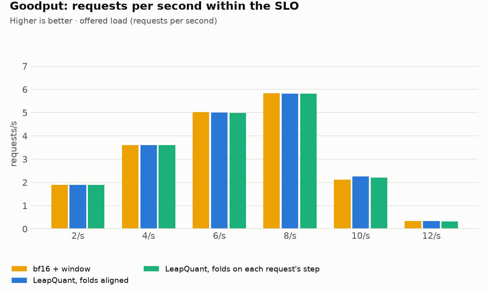
Output token throughput
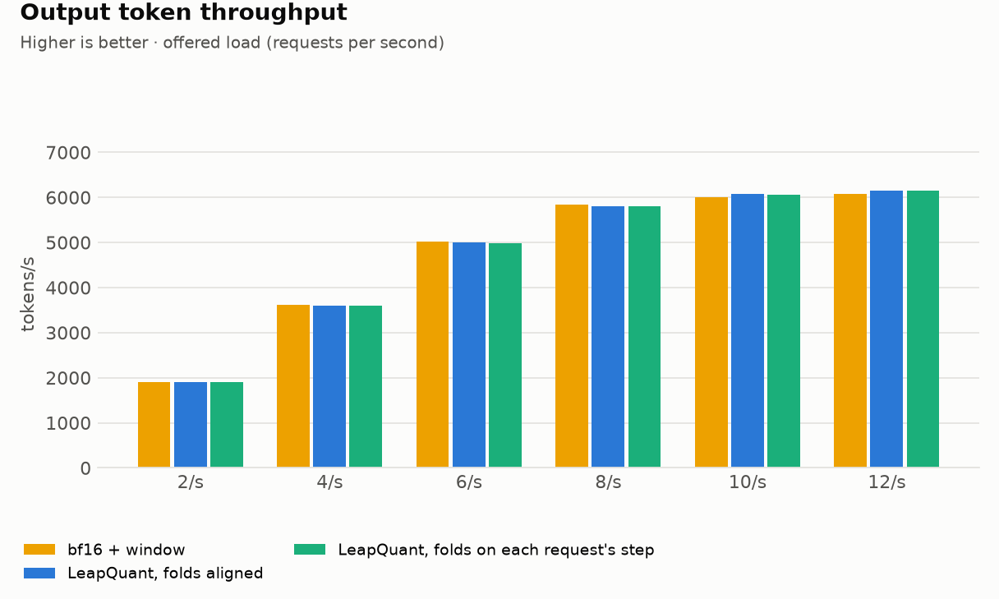
Time to first token, p99
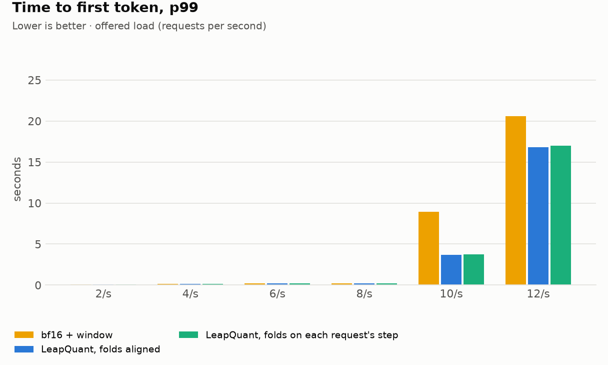
Time per output token, median
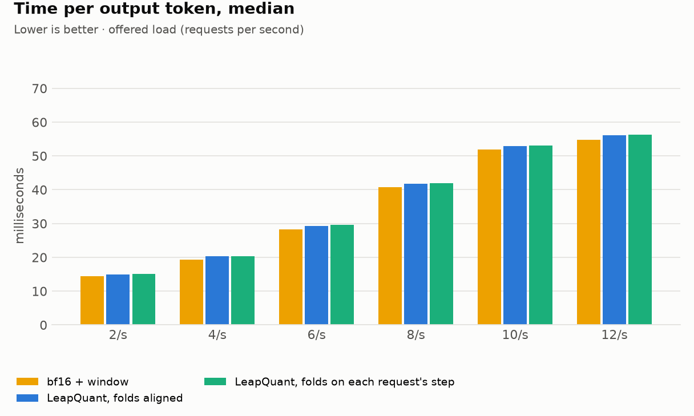
Time between tokens, p99
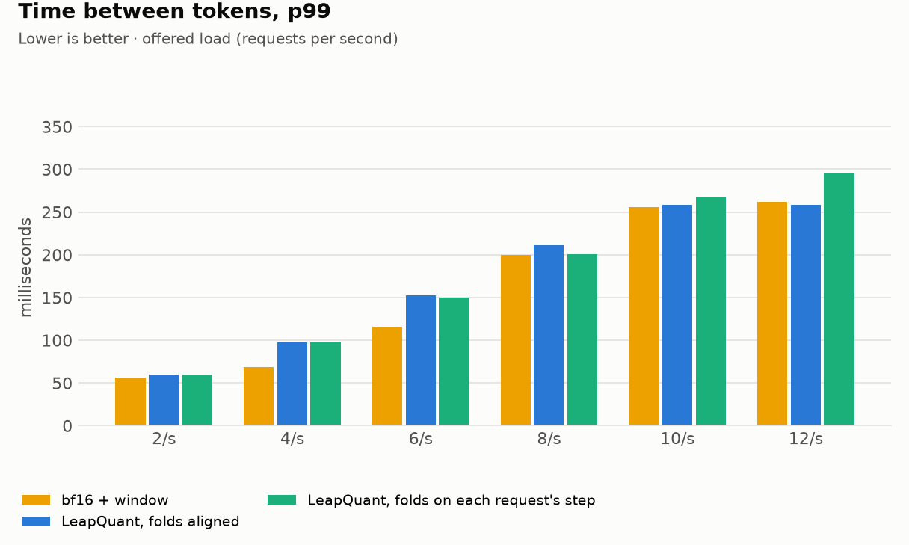
| Offered, req/s | Server | Goodput, req/s | Completed, req/s | Output tokens/s | TTFT median, ms | TTFT p99, ms | TPOT median, ms | TPOT p99, ms | ITL median, ms | ITL p99, ms | E2E median, ms | E2E p99, ms |
|---|---|---|---|---|---|---|---|---|---|---|---|---|
| 2 | bf16 + window | 1.90 | 1.90 | 1,902 | 54 | 102 | 14.4 | 15.5 | 13.2 | 56.2 | 14,489 | 15,568 |
| 2 | LeapQuant, folds aligned | 1.90 | 1.90 | 1,899 | 57 | 98 | 15.0 | 15.7 | 13.6 | 59.7 | 14,999 | 15,720 |
| 2 | LeapQuant, folds on each request's step | 1.90 | 1.90 | 1,898 | 57 | 97 | 15.1 | 15.8 | 13.8 | 60.2 | 15,157 | 15,898 |
| 4 | bf16 + window | 3.61 | 3.61 | 3,611 | 56 | 154 | 19.3 | 20.0 | 16.1 | 68.4 | 19,370 | 20,071 |
| 4 | LeapQuant, folds aligned | 3.60 | 3.60 | 3,600 | 59 | 133 | 20.2 | 20.9 | 16.4 | 97.2 | 20,292 | 20,939 |
| 4 | LeapQuant, folds on each request's step | 3.60 | 3.60 | 3,599 | 61 | 141 | 20.4 | 21.1 | 16.7 | 97.7 | 20,388 | 21,147 |
| 6 | bf16 + window | 5.02 | 5.02 | 5,024 | 61 | 195 | 28.2 | 31.2 | 21.7 | 115.4 | 28,264 | 31,237 |
| 6 | LeapQuant, folds aligned | 5.00 | 5.00 | 4,996 | 65 | 188 | 29.4 | 32.5 | 21.7 | 152.3 | 29,393 | 32,533 |
| 6 | LeapQuant, folds on each request's step | 4.99 | 4.99 | 4,991 | 66 | 191 | 29.6 | 32.9 | 22.3 | 150.3 | 29,691 | 32,915 |
| 8 | bf16 + window | 5.84 | 5.84 | 5,840 | 69 | 223 | 40.8 | 47.7 | 30.8 | 200.1 | 40,813 | 47,743 |
| 8 | LeapQuant, folds aligned | 5.81 | 5.81 | 5,811 | 73 | 206 | 41.7 | 48.9 | 31.2 | 210.9 | 41,774 | 48,923 |
| 8 | LeapQuant, folds on each request's step | 5.81 | 5.81 | 5,806 | 74 | 196 | 42.0 | 49.2 | 31.9 | 201.0 | 42,029 | 49,222 |
| 10 | bf16 + window | 2.11 | 6.00 | 5,998 | 85 | 8,946 | 52.0 | 58.6 | 43.0 | 256.2 | 51,980 | 58,668 |
| 10 | LeapQuant, folds aligned | 2.25 | 6.07 | 6,073 | 84 | 3,710 | 53.0 | 59.4 | 42.0 | 258.8 | 52,971 | 59,428 |
| 10 | LeapQuant, folds on each request's step | 2.20 | 6.06 | 6,061 | 86 | 3,743 | 53.1 | 59.5 | 43.1 | 266.9 | 53,154 | 59,557 |
| 12 | bf16 + window | 0.33 | 6.08 | 6,079 | 99 | 20,612 | 54.8 | 60.9 | 47.5 | 262.2 | 54,828 | 60,968 |
| 12 | LeapQuant, folds aligned | 0.33 | 6.16 | 6,156 | 95 | 16,835 | 56.2 | 61.8 | 47.2 | 258.8 | 56,190 | 61,861 |
| 12 | LeapQuant, folds on each request's step | 0.31 | 6.14 | 6,145 | 94 | 17,001 | 56.3 | 62.0 | 48.6 | 295.5 | 56,408 | 61,975 |
Every metric, per offered rate
2 requests/s offered
| Metric | bf16 + window | LeapQuant, folds aligned | LeapQuant, folds on each request's step | LeapQuant, folds aligned ÷ bf16 + window | LeapQuant, folds on each request's step ÷ bf16 + window |
|---|---|---|---|---|---|
| Throughput (one GPU: also the figure per GPU) | |||||
| Output token throughput (tok/s) | 1,902 | 1,899 | 1,898 | 0.998 | 0.998 |
| Total token throughput (tok/s) | 3,804 | 3,798 | 3,797 | 0.998 | 0.998 |
| Input token throughput (tok/s) | 1,902 | 1,899 | 1,898 | 0.998 | 0.998 |
| Request throughput (req/s) | 1.90 | 1.90 | 1.90 | 1.000 | 1.000 |
| Peak output token throughput (tok/s) | 2,808 | 2,785 | 2,769 | 0.992 | 0.986 |
| Speed per user (interactivity) | |||||
| Speed per user, median (tok/s) | 69.2 | 66.8 | 66.2 | 0.966 | 0.956 |
| Speed per user, 90% of requests at least (tok/s) | 66.5 | 64.4 | 63.8 | 0.967 | 0.959 |
| Speed per user, 99% of requests at least (tok/s) | 64.4 | 63.8 | 63.1 | 0.990 | 0.980 |
| Time to first token | |||||
| Mean TTFT (ms) | 57 | 60 | 60 | 1.056 | 1.061 |
| Median TTFT (ms) | 54 | 57 | 57 | 1.057 | 1.063 |
| P90 TTFT (ms) | 65 | 69 | 78 | 1.054 | 1.192 |
| P95 TTFT (ms) | 85 | 90 | 89 | 1.055 | 1.045 |
| P99 TTFT (ms) | 102 | 98 | 97 | 0.961 | 0.954 |
| Time per output token (after the first) | |||||
| Mean TPOT (ms) | 14.4 | 14.9 | 15.1 | 1.036 | 1.046 |
| Median TPOT (ms) | 14.4 | 15.0 | 15.1 | 1.035 | 1.046 |
| P90 TPOT (ms) | 15.0 | 15.5 | 15.7 | 1.034 | 1.043 |
| P95 TPOT (ms) | 15.2 | 15.6 | 15.7 | 1.028 | 1.037 |
| P99 TPOT (ms) | 15.5 | 15.7 | 15.8 | 1.010 | 1.021 |
| Time between tokens | |||||
| Mean ITL (ms) | 14.4 | 14.9 | 15.1 | 1.036 | 1.046 |
| Median ITL (ms) | 13.2 | 13.6 | 13.8 | 1.026 | 1.043 |
| P90 ITL (ms) | 14.0 | 14.4 | 14.3 | 1.030 | 1.026 |
| P95 ITL (ms) | 14.3 | 15.7 | 14.6 | 1.097 | 1.022 |
| P99 ITL (ms) | 56.2 | 59.7 | 60.2 | 1.064 | 1.072 |
| Max ITL (ms) | 189 | 185 | 246 | 0.981 | 1.301 |
| End-to-end latency | |||||
| Mean E2E Latency (ms) | 14,460 | 14,984 | 15,122 | 1.036 | 1.046 |
| Median E2E Latency (ms) | 14,489 | 14,999 | 15,157 | 1.035 | 1.046 |
| P90 E2E Latency (ms) | 15,071 | 15,576 | 15,709 | 1.034 | 1.042 |
| P95 E2E Latency (ms) | 15,225 | 15,641 | 15,777 | 1.027 | 1.036 |
| P99 E2E Latency (ms) | 15,568 | 15,720 | 15,898 | 1.010 | 1.021 |
| Load, requests, tokens, memory | |||||
| Concurrency | 27.50 | 28.46 | 28.71 | ||
| Peak concurrent requests | 41 | 43 | 43 | ||
| Successful requests | 600 | 600 | 600 | ||
| Benchmark duration (s) | 315.4 | 315.9 | 316.1 | 1.002 | 1.002 |
| Total input tokens | 600,000 | 600,000 | 600,000 | ||
| Total generated tokens | 600,000 | 600,000 | 600,000 | ||
| Client settings | |||||
| Prompts | 600 | 600 | 600 | ||
| Input / output tokens | 1,000 / 1,000 exact | 1,000 / 1,000 exact | 1,000 / 1,000 exact | ||
| Arrival rate, requests/s | 2.0 | 2.0 | 2.0 | ||
| Client concurrency limit | None | None | None | ||
| Output length forced (ignore EOS) | yes | yes | yes | ||
| Warm-up requests | 3 | 3 | 3 | ||
| Cache flushed before the point | yes | yes | yes | ||
| Temperature | 0.0 | 0.0 | 0.0 | ||
| Seed | 1 | 1 | 1 | ||
| Goodput SLO | ttft <= 2000 ms, tpot <= 50 ms | ttft <= 2000 ms, tpot <= 50 ms | ttft <= 2000 ms, tpot <= 50 ms | ||
| Request goodput (req/s) | 1.90 | 1.90 | 1.90 |
4 requests/s offered
| Metric | bf16 + window | LeapQuant, folds aligned | LeapQuant, folds on each request's step | LeapQuant, folds aligned ÷ bf16 + window | LeapQuant, folds on each request's step ÷ bf16 + window |
|---|---|---|---|---|---|
| Throughput (one GPU: also the figure per GPU) | |||||
| Output token throughput (tok/s) | 3,611 | 3,600 | 3,599 | 0.997 | 0.997 |
| Total token throughput (tok/s) | 7,222 | 7,200 | 7,197 | 0.997 | 0.997 |
| Input token throughput (tok/s) | 3,611 | 3,600 | 3,599 | 0.997 | 0.997 |
| Request throughput (req/s) | 3.61 | 3.60 | 3.60 | 0.997 | 0.997 |
| Peak output token throughput (tok/s) | 4,930 | 4,836 | 4,820 | 0.981 | 0.978 |
| Speed per user (interactivity) | |||||
| Speed per user, median (tok/s) | 51.7 | 49.4 | 49.1 | 0.955 | 0.950 |
| Speed per user, 90% of requests at least (tok/s) | 50.6 | 48.4 | 48.0 | 0.955 | 0.949 |
| Speed per user, 99% of requests at least (tok/s) | 50.0 | 47.8 | 47.5 | 0.957 | 0.950 |
| Time to first token | |||||
| Mean TTFT (ms) | 63 | 65 | 66 | 1.043 | 1.060 |
| Median TTFT (ms) | 56 | 59 | 61 | 1.048 | 1.076 |
| P90 TTFT (ms) | 92 | 92 | 92 | 1.002 | 1.004 |
| P95 TTFT (ms) | 98 | 99 | 98 | 1.012 | 1.002 |
| P99 TTFT (ms) | 154 | 133 | 141 | 0.866 | 0.917 |
| Time per output token (after the first) | |||||
| Mean TPOT (ms) | 18.9 | 19.8 | 19.9 | 1.048 | 1.054 |
| Median TPOT (ms) | 19.3 | 20.2 | 20.4 | 1.048 | 1.053 |
| P90 TPOT (ms) | 19.8 | 20.7 | 20.8 | 1.047 | 1.054 |
| P95 TPOT (ms) | 19.9 | 20.8 | 20.9 | 1.045 | 1.052 |
| P99 TPOT (ms) | 20.0 | 20.9 | 21.1 | 1.044 | 1.052 |
| Time between tokens | |||||
| Mean ITL (ms) | 18.9 | 19.8 | 19.9 | 1.048 | 1.054 |
| Median ITL (ms) | 16.1 | 16.4 | 16.7 | 1.022 | 1.040 |
| P90 ITL (ms) | 17.0 | 20.0 | 17.7 | 1.178 | 1.042 |
| P95 ITL (ms) | 58.3 | 62.1 | 62.8 | 1.066 | 1.077 |
| P99 ITL (ms) | 68.4 | 97.2 | 97.7 | 1.420 | 1.427 |
| Max ITL (ms) | 317 | 323 | 312 | 1.019 | 0.984 |
| End-to-end latency | |||||
| Mean E2E Latency (ms) | 18,966 | 19,878 | 19,987 | 1.048 | 1.054 |
| Median E2E Latency (ms) | 19,370 | 20,292 | 20,388 | 1.048 | 1.053 |
| P90 E2E Latency (ms) | 19,787 | 20,730 | 20,863 | 1.048 | 1.054 |
| P95 E2E Latency (ms) | 19,916 | 20,823 | 20,956 | 1.046 | 1.052 |
| P99 E2E Latency (ms) | 20,071 | 20,939 | 21,147 | 1.043 | 1.054 |
| Load, requests, tokens, memory | |||||
| Concurrency | 68.49 | 71.56 | 71.92 | ||
| Peak concurrent requests | 89 | 94 | 94 | ||
| Successful requests | 600 | 600 | 600 | ||
| Benchmark duration (s) | 166.2 | 166.7 | 166.7 | 1.003 | 1.003 |
| Total input tokens | 600,000 | 600,000 | 600,000 | ||
| Total generated tokens | 600,000 | 600,000 | 600,000 | ||
| Client settings | |||||
| Prompts | 600 | 600 | 600 | ||
| Input / output tokens | 1,000 / 1,000 exact | 1,000 / 1,000 exact | 1,000 / 1,000 exact | ||
| Arrival rate, requests/s | 4.0 | 4.0 | 4.0 | ||
| Client concurrency limit | None | None | None | ||
| Output length forced (ignore EOS) | yes | yes | yes | ||
| Warm-up requests | 3 | 3 | 3 | ||
| Cache flushed before the point | yes | yes | yes | ||
| Temperature | 0.0 | 0.0 | 0.0 | ||
| Seed | 1 | 1 | 1 | ||
| Goodput SLO | ttft <= 2000 ms, tpot <= 50 ms | ttft <= 2000 ms, tpot <= 50 ms | ttft <= 2000 ms, tpot <= 50 ms | ||
| Request goodput (req/s) | 3.61 | 3.60 | 3.60 |
6 requests/s offered
| Metric | bf16 + window | LeapQuant, folds aligned | LeapQuant, folds on each request's step | LeapQuant, folds aligned ÷ bf16 + window | LeapQuant, folds on each request's step ÷ bf16 + window |
|---|---|---|---|---|---|
| Throughput (one GPU: also the figure per GPU) | |||||
| Output token throughput (tok/s) | 5,024 | 4,996 | 4,991 | 0.994 | 0.994 |
| Total token throughput (tok/s) | 10,047 | 9,992 | 9,983 | 0.994 | 0.994 |
| Input token throughput (tok/s) | 5,024 | 4,996 | 4,991 | 0.994 | 0.994 |
| Request throughput (req/s) | 5.02 | 5.00 | 4.99 | 0.996 | 0.994 |
| Peak output token throughput (tok/s) | 7,900 | 8,008 | 7,994 | 1.014 | 1.012 |
| Speed per user (interactivity) | |||||
| Speed per user, median (tok/s) | 35.4 | 34.1 | 33.7 | 0.962 | 0.952 |
| Speed per user, 90% of requests at least (tok/s) | 32.6 | 31.6 | 31.3 | 0.968 | 0.958 |
| Speed per user, 99% of requests at least (tok/s) | 32.0 | 30.8 | 30.4 | 0.961 | 0.950 |
| Time to first token | |||||
| Mean TTFT (ms) | 70 | 74 | 75 | 1.052 | 1.061 |
| Median TTFT (ms) | 61 | 65 | 66 | 1.059 | 1.074 |
| P90 TTFT (ms) | 100 | 102 | 103 | 1.019 | 1.031 |
| P95 TTFT (ms) | 119 | 122 | 119 | 1.027 | 1.001 |
| P99 TTFT (ms) | 195 | 188 | 191 | 0.967 | 0.980 |
| Time per output token (after the first) | |||||
| Mean TPOT (ms) | 27.2 | 28.2 | 28.5 | 1.038 | 1.048 |
| Median TPOT (ms) | 28.2 | 29.4 | 29.6 | 1.040 | 1.050 |
| P90 TPOT (ms) | 30.6 | 31.6 | 32.0 | 1.033 | 1.044 |
| P95 TPOT (ms) | 30.9 | 32.3 | 32.6 | 1.044 | 1.055 |
| P99 TPOT (ms) | 31.2 | 32.5 | 32.9 | 1.041 | 1.052 |
| Time between tokens | |||||
| Mean ITL (ms) | 27.2 | 28.2 | 28.5 | 1.038 | 1.048 |
| Median ITL (ms) | 21.7 | 21.7 | 22.3 | 0.998 | 1.027 |
| P90 ITL (ms) | 27.2 | 36.6 | 39.0 | 1.347 | 1.434 |
| P95 ITL (ms) | 67.8 | 70.8 | 71.8 | 1.044 | 1.060 |
| P99 ITL (ms) | 115.4 | 152.3 | 150.3 | 1.320 | 1.302 |
| Max ITL (ms) | 358 | 359 | 356 | 1.002 | 0.994 |
| End-to-end latency | |||||
| Mean E2E Latency (ms) | 27,201 | 28,238 | 28,509 | 1.038 | 1.048 |
| Median E2E Latency (ms) | 28,264 | 29,393 | 29,691 | 1.040 | 1.050 |
| P90 E2E Latency (ms) | 30,719 | 31,772 | 32,030 | 1.034 | 1.043 |
| P95 E2E Latency (ms) | 30,939 | 32,342 | 32,667 | 1.045 | 1.056 |
| P99 E2E Latency (ms) | 31,237 | 32,533 | 32,915 | 1.042 | 1.054 |
| Load, requests, tokens, memory | |||||
| Concurrency | 136.65 | 141.08 | 142.30 | ||
| Peak concurrent requests | 195 | 204 | 206 | ||
| Successful requests | 600 | 600 | 600 | ||
| Benchmark duration (s) | 119.4 | 120.1 | 120.2 | 1.006 | 1.007 |
| Total input tokens | 600,000 | 600,000 | 600,000 | ||
| Total generated tokens | 600,000 | 600,000 | 600,000 | ||
| Client settings | |||||
| Prompts | 600 | 600 | 600 | ||
| Input / output tokens | 1,000 / 1,000 exact | 1,000 / 1,000 exact | 1,000 / 1,000 exact | ||
| Arrival rate, requests/s | 6.0 | 6.0 | 6.0 | ||
| Client concurrency limit | None | None | None | ||
| Output length forced (ignore EOS) | yes | yes | yes | ||
| Warm-up requests | 3 | 3 | 3 | ||
| Cache flushed before the point | yes | yes | yes | ||
| Temperature | 0.0 | 0.0 | 0.0 | ||
| Seed | 1 | 1 | 1 | ||
| Goodput SLO | ttft <= 2000 ms, tpot <= 50 ms | ttft <= 2000 ms, tpot <= 50 ms | ttft <= 2000 ms, tpot <= 50 ms | ||
| Request goodput (req/s) | 5.02 | 5.00 | 4.99 |
8 requests/s offered
| Metric | bf16 + window | LeapQuant, folds aligned | LeapQuant, folds on each request's step | LeapQuant, folds aligned ÷ bf16 + window | LeapQuant, folds on each request's step ÷ bf16 + window |
|---|---|---|---|---|---|
| Throughput (one GPU: also the figure per GPU) | |||||
| Output token throughput (tok/s) | 5,840 | 5,811 | 5,806 | 0.995 | 0.994 |
| Total token throughput (tok/s) | 11,681 | 11,622 | 11,612 | 0.995 | 0.994 |
| Input token throughput (tok/s) | 5,840 | 5,811 | 5,806 | 0.995 | 0.994 |
| Request throughput (req/s) | 5.84 | 5.81 | 5.81 | 0.995 | 0.995 |
| Peak output token throughput (tok/s) | 9,709 | 9,918 | 9,805 | 1.022 | 1.010 |
| Speed per user (interactivity) | |||||
| Speed per user, median (tok/s) | 24.5 | 24.0 | 23.8 | 0.978 | 0.972 |
| Speed per user, 90% of requests at least (tok/s) | 21.1 | 20.6 | 20.5 | 0.976 | 0.971 |
| Speed per user, 99% of requests at least (tok/s) | 21.0 | 20.5 | 20.3 | 0.976 | 0.971 |
| Time to first token | |||||
| Mean TTFT (ms) | 81 | 84 | 84 | 1.042 | 1.044 |
| Median TTFT (ms) | 69 | 73 | 74 | 1.062 | 1.076 |
| P90 TTFT (ms) | 121 | 125 | 126 | 1.028 | 1.036 |
| P95 TTFT (ms) | 150 | 152 | 154 | 1.011 | 1.025 |
| P99 TTFT (ms) | 223 | 206 | 196 | 0.924 | 0.878 |
| Time per output token (after the first) | |||||
| Mean TPOT (ms) | 39.0 | 40.1 | 40.3 | 1.027 | 1.033 |
| Median TPOT (ms) | 40.8 | 41.7 | 42.0 | 1.023 | 1.029 |
| P90 TPOT (ms) | 47.4 | 48.5 | 48.8 | 1.024 | 1.029 |
| P95 TPOT (ms) | 47.6 | 48.8 | 49.0 | 1.025 | 1.030 |
| P99 TPOT (ms) | 47.7 | 48.9 | 49.2 | 1.024 | 1.030 |
| Time between tokens | |||||
| Mean ITL (ms) | 39.0 | 40.1 | 40.3 | 1.027 | 1.033 |
| Median ITL (ms) | 30.8 | 31.2 | 31.9 | 1.013 | 1.034 |
| P90 ITL (ms) | 73.5 | 76.4 | 77.7 | 1.040 | 1.058 |
| P95 ITL (ms) | 84.7 | 90.7 | 92.9 | 1.070 | 1.097 |
| P99 ITL (ms) | 200.1 | 210.9 | 201.0 | 1.054 | 1.004 |
| Max ITL (ms) | 453 | 458 | 414 | 1.012 | 0.914 |
| End-to-end latency | |||||
| Mean E2E Latency (ms) | 39,089 | 40,157 | 40,384 | 1.027 | 1.033 |
| Median E2E Latency (ms) | 40,813 | 41,774 | 42,029 | 1.024 | 1.030 |
| P90 E2E Latency (ms) | 47,395 | 48,570 | 48,783 | 1.025 | 1.029 |
| P95 E2E Latency (ms) | 47,598 | 48,785 | 49,052 | 1.025 | 1.031 |
| P99 E2E Latency (ms) | 47,743 | 48,923 | 49,222 | 1.025 | 1.031 |
| Load, requests, tokens, memory | |||||
| Concurrency | 228.29 | 233.36 | 234.46 | ||
| Peak concurrent requests | 375 | 388 | 390 | ||
| Successful requests | 600 | 600 | 600 | ||
| Benchmark duration (s) | 102.7 | 103.2 | 103.3 | 1.005 | 1.006 |
| Total input tokens | 600,000 | 600,000 | 600,000 | ||
| Total generated tokens | 600,000 | 600,000 | 600,000 | ||
| Client settings | |||||
| Prompts | 600 | 600 | 600 | ||
| Input / output tokens | 1,000 / 1,000 exact | 1,000 / 1,000 exact | 1,000 / 1,000 exact | ||
| Arrival rate, requests/s | 8.0 | 8.0 | 8.0 | ||
| Client concurrency limit | None | None | None | ||
| Output length forced (ignore EOS) | yes | yes | yes | ||
| Warm-up requests | 3 | 3 | 3 | ||
| Cache flushed before the point | yes | yes | yes | ||
| Temperature | 0.0 | 0.0 | 0.0 | ||
| Seed | 1 | 1 | 1 | ||
| Goodput SLO | ttft <= 2000 ms, tpot <= 50 ms | ttft <= 2000 ms, tpot <= 50 ms | ttft <= 2000 ms, tpot <= 50 ms | ||
| Request goodput (req/s) | 5.84 | 5.81 | 5.81 |
10 requests/s offered
| Metric | bf16 + window | LeapQuant, folds aligned | LeapQuant, folds on each request's step | LeapQuant, folds aligned ÷ bf16 + window | LeapQuant, folds on each request's step ÷ bf16 + window |
|---|---|---|---|---|---|
| Throughput (one GPU: also the figure per GPU) | |||||
| Output token throughput (tok/s) | 5,998 | 6,073 | 6,061 | 1.013 | 1.010 |
| Total token throughput (tok/s) | 11,996 | 12,146 | 12,122 | 1.013 | 1.010 |
| Input token throughput (tok/s) | 5,998 | 6,073 | 6,061 | 1.013 | 1.010 |
| Request throughput (req/s) | 6.00 | 6.07 | 6.06 | 1.012 | 1.010 |
| Peak output token throughput (tok/s) | 9,493 | 10,029 | 9,863 | 1.056 | 1.039 |
| Speed per user (interactivity) | |||||
| Speed per user, median (tok/s) | 19.2 | 18.9 | 18.8 | 0.981 | 0.978 |
| Speed per user, 90% of requests at least (tok/s) | 17.2 | 17.0 | 16.9 | 0.987 | 0.985 |
| Speed per user, 99% of requests at least (tok/s) | 17.1 | 16.8 | 16.8 | 0.987 | 0.985 |
| Time to first token | |||||
| Mean TTFT (ms) | 638 | 198 | 207 | 0.310 | 0.325 |
| Median TTFT (ms) | 85 | 84 | 86 | 0.996 | 1.014 |
| P90 TTFT (ms) | 260 | 162 | 165 | 0.624 | 0.637 |
| P95 TTFT (ms) | 5,211 | 243 | 243 | 0.047 | 0.047 |
| P99 TTFT (ms) | 8,946 | 3,710 | 3,743 | 0.415 | 0.418 |
| Time per output token (after the first) | |||||
| Mean TPOT (ms) | 49.9 | 51.2 | 51.4 | 1.026 | 1.030 |
| Median TPOT (ms) | 52.0 | 53.0 | 53.1 | 1.019 | 1.023 |
| P90 TPOT (ms) | 58.2 | 58.9 | 59.1 | 1.013 | 1.016 |
| P95 TPOT (ms) | 58.5 | 59.2 | 59.3 | 1.013 | 1.015 |
| P99 TPOT (ms) | 58.6 | 59.4 | 59.5 | 1.013 | 1.015 |
| Time between tokens | |||||
| Mean ITL (ms) | 49.9 | 51.2 | 51.4 | 1.026 | 1.030 |
| Median ITL (ms) | 43.0 | 42.0 | 43.1 | 0.978 | 1.003 |
| P90 ITL (ms) | 85.5 | 86.8 | 88.9 | 1.014 | 1.040 |
| P95 ITL (ms) | 123.7 | 130.5 | 129.3 | 1.055 | 1.046 |
| P99 ITL (ms) | 256.2 | 258.8 | 266.9 | 1.010 | 1.042 |
| Max ITL (ms) | 519 | 536 | 529 | 1.032 | 1.019 |
| End-to-end latency | |||||
| Mean E2E Latency (ms) | 50,505 | 51,361 | 51,559 | 1.017 | 1.021 |
| Median E2E Latency (ms) | 51,980 | 52,971 | 53,154 | 1.019 | 1.023 |
| P90 E2E Latency (ms) | 58,168 | 58,932 | 59,088 | 1.013 | 1.016 |
| P95 E2E Latency (ms) | 58,477 | 59,216 | 59,346 | 1.013 | 1.015 |
| P99 E2E Latency (ms) | 58,668 | 59,428 | 59,557 | 1.013 | 1.015 |
| Load, requests, tokens, memory | |||||
| Concurrency | 302.92 | 311.92 | 312.49 | ||
| Peak concurrent requests | 511 | 519 | 520 | ||
| Successful requests | 600 | 600 | 600 | ||
| Benchmark duration (s) | 100.0 | 98.8 | 99.0 | 0.988 | 0.990 |
| Total input tokens | 600,000 | 600,000 | 600,000 | ||
| Total generated tokens | 600,000 | 600,000 | 600,000 | ||
| Client settings | |||||
| Prompts | 600 | 600 | 600 | ||
| Input / output tokens | 1,000 / 1,000 exact | 1,000 / 1,000 exact | 1,000 / 1,000 exact | ||
| Arrival rate, requests/s | 10.0 | 10.0 | 10.0 | ||
| Client concurrency limit | None | None | None | ||
| Output length forced (ignore EOS) | yes | yes | yes | ||
| Warm-up requests | 3 | 3 | 3 | ||
| Cache flushed before the point | yes | yes | yes | ||
| Temperature | 0.0 | 0.0 | 0.0 | ||
| Seed | 1 | 1 | 1 | ||
| Goodput SLO | ttft <= 2000 ms, tpot <= 50 ms | ttft <= 2000 ms, tpot <= 50 ms | ttft <= 2000 ms, tpot <= 50 ms | ||
| Request goodput (req/s) | 2.11 | 2.25 | 2.20 |
12 requests/s offered
| Metric | bf16 + window | LeapQuant, folds aligned | LeapQuant, folds on each request's step | LeapQuant, folds aligned ÷ bf16 + window | LeapQuant, folds on each request's step ÷ bf16 + window |
|---|---|---|---|---|---|
| Throughput (one GPU: also the figure per GPU) | |||||
| Output token throughput (tok/s) | 6,079 | 6,156 | 6,145 | 1.013 | 1.011 |
| Total token throughput (tok/s) | 12,159 | 12,312 | 12,289 | 1.013 | 1.011 |
| Input token throughput (tok/s) | 6,079 | 6,156 | 6,145 | 1.013 | 1.011 |
| Request throughput (req/s) | 6.08 | 6.16 | 6.14 | 1.013 | 1.010 |
| Peak output token throughput (tok/s) | 9,671 | 10,329 | 10,174 | 1.068 | 1.052 |
| Speed per user (interactivity) | |||||
| Speed per user, median (tok/s) | 18.2 | 17.8 | 17.8 | 0.976 | 0.973 |
| Speed per user, 90% of requests at least (tok/s) | 16.5 | 16.2 | 16.2 | 0.986 | 0.983 |
| Speed per user, 99% of requests at least (tok/s) | 16.4 | 16.2 | 16.1 | 0.986 | 0.984 |
| Time to first token | |||||
| Mean TTFT (ms) | 3,293 | 2,216 | 2,263 | 0.673 | 0.687 |
| Median TTFT (ms) | 99 | 95 | 94 | 0.958 | 0.950 |
| P90 TTFT (ms) | 13,941 | 12,674 | 12,979 | 0.909 | 0.931 |
| P95 TTFT (ms) | 17,674 | 13,805 | 14,084 | 0.781 | 0.797 |
| P99 TTFT (ms) | 20,612 | 16,835 | 17,001 | 0.817 | 0.825 |
| Time per output token (after the first) | |||||
| Mean TPOT (ms) | 51.9 | 53.5 | 53.6 | 1.032 | 1.034 |
| Median TPOT (ms) | 54.8 | 56.2 | 56.3 | 1.025 | 1.028 |
| P90 TPOT (ms) | 60.7 | 61.6 | 61.7 | 1.015 | 1.017 |
| P95 TPOT (ms) | 60.8 | 61.7 | 61.8 | 1.014 | 1.016 |
| P99 TPOT (ms) | 60.9 | 61.8 | 62.0 | 1.015 | 1.017 |
| Time between tokens | |||||
| Mean ITL (ms) | 51.9 | 53.5 | 53.6 | 1.032 | 1.034 |
| Median ITL (ms) | 47.5 | 47.2 | 48.6 | 0.992 | 1.022 |
| P90 ITL (ms) | 79.7 | 82.3 | 78.8 | 1.032 | 0.989 |
| P95 ITL (ms) | 124.5 | 131.4 | 134.7 | 1.055 | 1.081 |
| P99 ITL (ms) | 262.2 | 258.8 | 295.5 | 0.987 | 1.127 |
| Max ITL (ms) | 685 | 693 | 691 | 1.012 | 1.008 |
| End-to-end latency | |||||
| Mean E2E Latency (ms) | 55,113 | 55,713 | 55,846 | 1.011 | 1.013 |
| Median E2E Latency (ms) | 54,828 | 56,190 | 56,408 | 1.025 | 1.029 |
| P90 E2E Latency (ms) | 60,711 | 61,666 | 61,753 | 1.016 | 1.017 |
| P95 E2E Latency (ms) | 60,871 | 61,761 | 61,881 | 1.015 | 1.017 |
| P99 E2E Latency (ms) | 60,968 | 61,861 | 61,975 | 1.015 | 1.017 |
| Load, requests, tokens, memory | |||||
| Concurrency | 335.05 | 342.98 | 343.15 | ||
| Peak concurrent requests | 578 | 600 | 600 | ||
| Successful requests | 600 | 600 | 600 | ||
| Benchmark duration (s) | 98.7 | 97.5 | 97.7 | 0.988 | 0.989 |
| Total input tokens | 600,000 | 600,000 | 600,000 | ||
| Total generated tokens | 600,000 | 600,000 | 600,000 | ||
| Client settings | |||||
| Prompts | 600 | 600 | 600 | ||
| Input / output tokens | 1,000 / 1,000 exact | 1,000 / 1,000 exact | 1,000 / 1,000 exact | ||
| Arrival rate, requests/s | 12.0 | 12.0 | 12.0 | ||
| Client concurrency limit | None | None | None | ||
| Output length forced (ignore EOS) | yes | yes | yes | ||
| Warm-up requests | 3 | 3 | 3 | ||
| Cache flushed before the point | yes | yes | yes | ||
| Temperature | 0.0 | 0.0 | 0.0 | ||
| Seed | 1 | 1 | 1 | ||
| Goodput SLO | ttft <= 2000 ms, tpot <= 50 ms | ttft <= 2000 ms, tpot <= 50 ms | ttft <= 2000 ms, tpot <= 50 ms | ||
| Request goodput (req/s) | 0.33 | 0.33 | 0.31 |
Full measurements
One row per log (serving_<label>_<shape>_c<users>.log), every metric
| Label | Shape | Users | Output token throughput (tok/s) | Total token throughput (tok/s) | Input token throughput (tok/s) | Request throughput (req/s) | Peak output token throughput (tok/s) | Speed per user, median (tok/s) | Speed per user, 90% of requests at least (tok/s) | Speed per user, 99% of requests at least (tok/s) | Mean TTFT (ms) | Median TTFT (ms) | P90 TTFT (ms) | P95 TTFT (ms) | P99 TTFT (ms) | Mean TPOT (ms) | Median TPOT (ms) | P90 TPOT (ms) | P95 TPOT (ms) | P99 TPOT (ms) | Mean ITL (ms) | Median ITL (ms) | P90 ITL (ms) | P95 ITL (ms) | P99 ITL (ms) | Max ITL (ms) | Mean E2E Latency (ms) | Median E2E Latency (ms) | P90 E2E Latency (ms) | P95 E2E Latency (ms) | P99 E2E Latency (ms) | Max request concurrency | Concurrency | Peak concurrent requests | Successful requests | Benchmark duration (s) | Total input tokens | Total generated tokens | Peak GPU memory (MiB) |
|---|---|---|---|---|---|---|---|---|---|---|---|---|---|---|---|---|---|---|---|---|---|---|---|---|---|---|---|---|---|---|---|---|---|---|---|---|---|---|---|
| off_bf16_window_r1 | aa1k | 1 | 91 | 182 | 91 | 0.09 | 92 | 91.4 | 91.3 | 91.2 | 47 | 46 | 50 | 53 | 55 | 10.9 | 10.9 | 10.9 | 11.0 | 11.0 | 10.9 | 10.9 | 11.0 | 11.1 | 11.2 | 19 | 10,976 | 10,971 | 10,992 | 10,999 | 11,004 | 1 | 1.00 | 2 | 8 | 87.8 | 8,000 | 8,000 | 68,576 |
| off_fp32_packed_r1 | aa1k | 1 | 95 | 190 | 95 | 0.09 | 96 | 95.2 | 95.1 | 95.1 | 48 | 49 | 50 | 50 | 50 | 10.5 | 10.5 | 10.5 | 10.5 | 10.5 | 10.5 | 10.5 | 10.6 | 10.6 | 11.0 | 34 | 10,540 | 10,541 | 10,546 | 10,548 | 10,549 | 1 | 1.00 | 2 | 8 | 84.3 | 8,000 | 8,000 | 66,008 |
| off_leapquant_cuda_r1 | aa1k | 1 | 87 | 174 | 87 | 0.09 | 89 | 87.5 | 87.4 | 87.4 | 51 | 52 | 53 | 53 | 53 | 11.4 | 11.4 | 11.4 | 11.4 | 11.4 | 11.4 | 11.4 | 11.6 | 11.7 | 11.8 | 26 | 11,471 | 11,473 | 11,478 | 11,480 | 11,483 | 1 | 1.00 | 2 | 8 | 91.8 | 8,000 | 8,000 | 66,402 |
| off_bf16_window_r1 | ix8k1k | 1 | 88 | 791 | 703 | 0.09 | 91 | 90.3 | 90.3 | 90.3 | 325 | 325 | 327 | 327 | 327 | 11.1 | 11.1 | 11.1 | 11.1 | 11.1 | 11.1 | 11.1 | 11.2 | 11.2 | 11.3 | 14 | 11,650 | 11,654 | 11,659 | 11,659 | 11,660 | 1 | 1.00 | 2 | 8 | 93.2 | 65,536 | 8,192 | 69,450 |
| off_fp32_packed_r1 | ix8k1k | 1 | 91 | 823 | 731 | 0.09 | 95 | 94.0 | 94.0 | 94.0 | 315 | 313 | 322 | 324 | 325 | 10.6 | 10.6 | 10.6 | 10.6 | 10.6 | 10.6 | 10.6 | 10.7 | 10.7 | 10.9 | 34 | 11,198 | 11,198 | 11,202 | 11,203 | 11,204 | 1 | 1.00 | 2 | 8 | 89.6 | 65,536 | 8,192 | 66,344 |
| off_leapquant_cuda_r1 | ix8k1k | 1 | 84 | 758 | 674 | 0.08 | 87 | 86.4 | 86.4 | 86.4 | 317 | 317 | 321 | 322 | 322 | 11.6 | 11.6 | 11.6 | 11.6 | 11.6 | 11.6 | 11.6 | 11.7 | 11.8 | 11.9 | 15 | 12,153 | 12,153 | 12,159 | 12,161 | 12,163 | 1 | 1.00 | 2 | 8 | 97.2 | 65,536 | 8,192 | 66,798 |
| off_bf16_window_r1 | aa1k | 4 | 351 | 703 | 351 | 0.35 | 360 | 89.1 | 88.2 | 88.2 | 136 | 164 | 167 | 167 | 167 | 11.2 | 11.2 | 11.3 | 11.3 | 11.3 | 11.2 | 11.2 | 11.3 | 11.4 | 11.5 | 131 | 11,376 | 11,376 | 11,377 | 11,377 | 11,377 | 4 | 4.00 | 8 | 8 | 22.8 | 8,000 | 8,000 | 68,788 |
| off_fp32_packed_r1 | aa1k | 4 | 361 | 721 | 361 | 0.36 | 368 | 91.4 | 90.5 | 90.5 | 132 | 160 | 161 | 161 | 161 | 11.0 | 10.9 | 11.1 | 11.1 | 11.1 | 11.0 | 10.9 | 11.0 | 11.1 | 11.2 | 125 | 11,087 | 11,087 | 11,092 | 11,092 | 11,092 | 4 | 4.00 | 8 | 8 | 22.2 | 8,000 | 8,000 | 66,102 |
| off_leapquant_cuda_r1 | aa1k | 4 | 336 | 673 | 336 | 0.34 | 344 | 85.2 | 84.5 | 84.3 | 137 | 165 | 167 | 167 | 167 | 11.8 | 11.7 | 11.8 | 11.8 | 11.9 | 11.8 | 11.7 | 11.9 | 12.1 | 12.2 | 128 | 11,882 | 11,882 | 11,897 | 11,897 | 11,897 | 4 | 4.00 | 8 | 8 | 23.8 | 8,000 | 8,000 | 66,496 |
| off_bf16_window_r1 | aa1k | 16 | 1,239 | 2,478 | 1,239 | 1.24 | 1,328 | 79.7 | 79.7 | 77.7 | 466 | 385 | 651 | 652 | 652 | 12.4 | 12.5 | 12.6 | 12.7 | 12.9 | 12.4 | 12.3 | 12.5 | 12.6 | 12.7 | 618 | 12,902 | 12,902 | 12,920 | 12,921 | 12,921 | 16 | 15.99 | 32 | 32 | 25.8 | 32,000 | 32,000 | 69,316 |
| off_fp32_packed_r1 | aa1k | 16 | 1,228 | 2,455 | 1,228 | 1.23 | 1,312 | 78.9 | 78.8 | 77.0 | 443 | 361 | 618 | 618 | 618 | 12.6 | 12.7 | 12.7 | 12.8 | 13.0 | 12.6 | 12.4 | 12.6 | 12.6 | 12.8 | 588 | 13,022 | 13,022 | 13,038 | 13,038 | 13,039 | 16 | 15.99 | 32 | 32 | 26.1 | 32,000 | 32,000 | 66,372 |
| off_leapquant_cuda_r1 | aa1k | 16 | 1,202 | 2,404 | 1,202 | 1.20 | 1,280 | 77.3 | 77.1 | 75.4 | 452 | 365 | 622 | 622 | 622 | 12.9 | 12.9 | 13.0 | 13.1 | 13.3 | 12.9 | 12.6 | 12.9 | 13.6 | 13.8 | 588 | 13,303 | 13,303 | 13,322 | 13,323 | 13,323 | 16 | 15.99 | 32 | 32 | 26.6 | 32,000 | 32,000 | 66,762 |
| off_bf16_window_r1 | ix8k1k | 16 | 814 | 7,323 | 6,509 | 0.79 | 1,112 | 59.0 | 52.7 | 51.7 | 2,771 | 2,770 | 4,845 | 5,034 | 5,214 | 17.0 | 17.0 | 19.0 | 19.2 | 19.4 | 17.0 | 14.6 | 14.8 | 14.8 | 15.0 | 4,911 | 20,127 | 20,126 | 20,150 | 20,150 | 20,150 | 16 | 15.99 | 32 | 32 | 40.3 | 262,144 | 32,768 | 69,350 |
| off_fp32_packed_r1 | ix8k1k | 16 | 814 | 7,324 | 6,510 | 0.79 | 1,104 | 58.7 | 52.6 | 51.7 | 2,692 | 2,691 | 4,711 | 4,890 | 5,062 | 17.0 | 17.0 | 19.0 | 19.2 | 19.4 | 17.0 | 14.7 | 14.9 | 14.9 | 15.2 | 4,765 | 20,122 | 20,121 | 20,124 | 20,125 | 20,126 | 16 | 15.99 | 32 | 32 | 40.3 | 262,144 | 32,768 | 66,304 |
| off_leapquant_cuda_r1 | ix8k1k | 16 | 802 | 7,216 | 6,415 | 0.78 | 1,081 | 57.7 | 51.8 | 50.9 | 2,703 | 2,701 | 4,731 | 4,913 | 5,092 | 17.3 | 17.3 | 19.3 | 19.5 | 19.6 | 17.3 | 14.9 | 15.2 | 15.9 | 16.1 | 4,798 | 20,421 | 20,422 | 20,433 | 20,433 | 20,434 | 16 | 15.99 | 32 | 32 | 40.9 | 262,144 | 32,768 | 66,670 |
| off_bf16_window_r1 | aa1k | 64 | 3,622 | 7,244 | 3,622 | 3.62 | 4,356 | 61.2 | 57.8 | 57.2 | 1,411 | 1,338 | 2,268 | 2,468 | 2,486 | 16.3 | 16.3 | 17.3 | 17.3 | 17.5 | 16.3 | 15.1 | 15.7 | 15.9 | 16.5 | 2,442 | 17,652 | 17,654 | 17,672 | 17,674 | 17,674 | 64 | 63.93 | 128 | 128 | 35.3 | 128,000 | 128,000 | 69,450 |
| off_fp32_packed_r1 | aa1k | 64 | 3,286 | 6,573 | 3,286 | 3.29 | 3,904 | 55.0 | 52.4 | 51.8 | 1,355 | 1,285 | 2,192 | 2,357 | 2,402 | 18.1 | 18.2 | 19.1 | 19.1 | 19.3 | 18.1 | 17.1 | 17.6 | 17.6 | 17.9 | 2,333 | 19,456 | 19,458 | 19,494 | 19,495 | 19,495 | 64 | 63.94 | 128 | 128 | 39.0 | 128,000 | 128,000 | 66,372 |
| off_leapquant_cuda_r1 | aa1k | 64 | 3,545 | 7,090 | 3,545 | 3.54 | 4,264 | 59.7 | 56.6 | 56.0 | 1,372 | 1,292 | 2,203 | 2,401 | 2,419 | 16.7 | 16.8 | 17.7 | 17.7 | 17.9 | 16.7 | 15.4 | 16.0 | 18.5 | 19.3 | 2,369 | 18,034 | 18,035 | 18,058 | 18,059 | 18,059 | 64 | 63.93 | 128 | 128 | 36.1 | 128,000 | 128,000 | 66,798 |
| off_bf16_window_r1 | ix8k1k | 64 | 1,451 | 13,056 | 11,606 | 1.42 | 2,752 | 29.6 | 23.9 | 23.0 | 10,678 | 10,612 | 19,050 | 20,103 | 20,781 | 33.7 | 33.8 | 41.9 | 42.9 | 43.5 | 33.7 | 23.7 | 24.3 | 24.4 | 25.1 | 20,557 | 45,149 | 45,147 | 45,225 | 45,228 | 45,233 | 64 | 63.96 | 128 | 128 | 90.3 | 1,048,576 | 131,072 | 69,350 |
| off_fp32_packed_r1 | ix8k1k | 64 | 1,274 | 11,469 | 10,195 | 1.24 | 2,385 | 34.5 | 27.1 | 26.0 | 14,548 | 10,261 | 41,486 | 42,457 | 43,297 | 28.7 | 29.0 | 36.9 | 37.8 | 38.4 | 28.7 | 22.6 | 23.1 | 23.2 | 23.4 | 16,365 | 43,879 | 39,936 | 62,901 | 79,862 | 79,862 | 64 | 54.61 | 117 | 128 | 102.8 | 1,048,576 | 131,072 | 66,304 |
| off_leapquant_cuda_r1 | ix8k1k | 64 | 1,456 | 13,107 | 11,650 | 1.42 | 2,752 | 29.6 | 24.0 | 23.1 | 10,350 | 10,360 | 18,414 | 19,400 | 20,167 | 33.9 | 33.8 | 41.8 | 42.7 | 43.3 | 33.9 | 23.9 | 24.6 | 27.3 | 28.2 | 20,022 | 44,976 | 44,974 | 45,056 | 45,059 | 45,063 | 64 | 63.96 | 128 | 128 | 90.0 | 1,048,576 | 131,072 | 66,670 |
| off_bf16_window_r1 | aa1k | 128 | 5,284 | 10,568 | 5,284 | 5.28 | 7,088 | 46.3 | 42.5 | 41.8 | 2,638 | 2,574 | 4,466 | 4,780 | 4,936 | 21.6 | 21.6 | 23.5 | 23.8 | 23.9 | 21.6 | 19.2 | 20.2 | 20.5 | 21.8 | 4,933 | 24,195 | 24,195 | 24,228 | 24,234 | 24,238 | 128 | 127.85 | 256 | 256 | 48.5 | 256,000 | 256,000 | 69,450 |
| off_fp32_packed_r1 | aa1k | 128 | 4,513 | 9,026 | 4,513 | 4.51 | 5,760 | 38.7 | 36.1 | 35.7 | 2,540 | 2,498 | 4,295 | 4,586 | 4,719 | 25.8 | 25.8 | 27.7 | 28.0 | 28.0 | 25.8 | 23.6 | 24.5 | 24.6 | 24.8 | 4,722 | 28,332 | 28,333 | 28,359 | 28,363 | 28,366 | 128 | 127.87 | 256 | 256 | 56.7 | 256,000 | 256,000 | 66,344 |
| off_leapquant_cuda_r1 | aa1k | 128 | 5,264 | 10,527 | 5,264 | 5.26 | 6,928 | 45.9 | 42.3 | 41.7 | 2,562 | 2,523 | 4,338 | 4,637 | 4,776 | 21.8 | 21.8 | 23.6 | 23.9 | 24.0 | 21.8 | 19.1 | 20.2 | 25.8 | 27.4 | 4,754 | 24,291 | 24,296 | 24,314 | 24,316 | 24,316 | 128 | 127.86 | 256 | 256 | 48.6 | 256,000 | 256,000 | 66,798 |
| off_bf16_window_r1 | ix8k1k | 128 | 1,555 | 13,995 | 12,440 | 1.52 | 3,400 | 24.0 | 17.2 | 16.3 | 29,013 | 21,275 | 68,940 | 71,047 | 72,708 | 42.8 | 41.7 | 58.1 | 60.2 | 61.4 | 42.8 | 30.2 | 31.2 | 31.4 | 32.5 | 32,361 | 72,801 | 63,891 | 127,763 | 127,765 | 127,769 | 128 | 110.55 | 228 | 256 | 168.6 | 2,097,152 | 262,144 | 69,350 |
| off_fp32_packed_r1 | ix8k1k | 128 | 1,343 | 12,091 | 10,748 | 1.31 | 2,385 | 33.2 | 27.1 | 25.9 | 50,303 | 51,330 | 84,374 | 85,676 | 86,748 | 30.2 | 30.1 | 36.9 | 37.7 | 38.6 | 30.2 | 22.7 | 23.2 | 23.2 | 23.6 | 16,439 | 81,164 | 79,955 | 119,891 | 120,021 | 120,022 | 128 | 106.48 | 181 | 256 | 195.1 | 2,097,152 | 262,144 | 66,304 |
| off_leapquant_cuda_r1 | ix8k1k | 128 | 1,562 | 14,062 | 12,500 | 1.53 | 3,456 | 21.7 | 16.2 | 15.4 | 26,197 | 20,490 | 69,965 | 71,995 | 73,627 | 45.5 | 46.1 | 61.9 | 63.9 | 65.1 | 45.5 | 32.1 | 33.2 | 38.0 | 39.6 | 33,920 | 72,692 | 67,617 | 100,170 | 135,216 | 135,217 | 128 | 110.92 | 236 | 256 | 167.8 | 2,097,152 | 262,144 | 66,690 |
| off_bf16_window_r1 | aa1k | 256 | 6,744 | 13,487 | 6,744 | 6.74 | 9,984 | 30.5 | 27.3 | 26.6 | 5,133 | 5,120 | 8,918 | 9,534 | 9,862 | 32.8 | 32.8 | 36.6 | 37.3 | 37.6 | 32.8 | 27.9 | 29.9 | 30.4 | 33.1 | 9,876 | 37,916 | 37,924 | 37,958 | 37,962 | 37,969 | 256 | 255.69 | 400 | 512 | 75.9 | 512,000 | 512,000 | 69,450 |
| off_fp32_packed_r1 | aa1k | 256 | 4,936 | 9,873 | 4,936 | 4.94 | 7,381 | 24.7 | 22.7 | 22.2 | 6,036 | 4,925 | 8,703 | 9,104 | 45,624 | 39.8 | 40.5 | 44.1 | 44.7 | 45.1 | 39.8 | 36.1 | 38.0 | 38.2 | 38.7 | 8,921 | 45,748 | 45,388 | 45,418 | 45,425 | 90,643 | 256 | 225.83 | 504 | 512 | 103.7 | 512,000 | 512,000 | 66,344 |
| off_leapquant_cuda_r1 | aa1k | 256 | 6,811 | 13,623 | 6,811 | 6.81 | 9,984 | 30.7 | 27.5 | 26.9 | 4,968 | 4,952 | 8,637 | 9,213 | 9,545 | 32.6 | 32.6 | 36.3 | 36.9 | 37.2 | 32.6 | 27.0 | 29.2 | 41.5 | 45.2 | 9,526 | 37,541 | 37,541 | 37,571 | 37,578 | 37,582 | 256 | 255.71 | 512 | 512 | 75.2 | 512,000 | 512,000 | 66,798 |
| off_bf16_window_r1 | ix8k1k | 256 | 1,553 | 13,979 | 12,426 | 1.52 | 3,434 | 21.8 | 16.9 | 16.2 | 90,093 | 90,672 | 140,729 | 143,612 | 145,856 | 45.6 | 45.9 | 59.0 | 60.3 | 61.9 | 45.6 | 30.5 | 31.4 | 31.8 | 32.8 | 32,535 | 136,775 | 128,223 | 192,246 | 192,252 | 192,256 | 256 | 207.47 | 356 | 512 | 337.5 | 4,194,304 | 524,288 | 69,350 |
| off_fp32_packed_r1 | ix8k1k | 256 | 1,341 | 12,070 | 10,729 | 1.31 | 2,438 | 33.1 | 27.0 | 25.8 | 123,291 | 136,927 | 171,041 | 172,543 | 173,875 | 30.4 | 30.2 | 37.0 | 38.1 | 38.8 | 30.4 | 22.8 | 23.2 | 23.4 | 23.9 | 16,660 | 154,364 | 160,989 | 200,952 | 201,019 | 201,024 | 256 | 202.16 | 309 | 512 | 390.9 | 4,194,304 | 524,288 | 66,304 |
| off_leapquant_cuda_r1 | ix8k1k | 256 | 1,618 | 14,565 | 12,946 | 1.58 | 3,456 | 21.2 | 16.1 | 15.3 | 85,985 | 89,214 | 142,932 | 145,559 | 147,726 | 47.6 | 47.2 | 62.0 | 63.5 | 65.5 | 47.6 | 32.2 | 33.3 | 38.1 | 39.9 | 34,010 | 134,714 | 135,404 | 203,167 | 203,175 | 203,183 | 256 | 212.90 | 364 | 512 | 324.0 | 4,194,304 | 524,288 | 66,690 |
| off_bf16_window_r1 | aa1k | 512 | 6,555 | 13,109 | 6,555 | 6.55 | 10,258 | 17.4 | 15.3 | 14.9 | 14,848 | 10,099 | 17,849 | 68,194 | 69,128 | 54.6 | 57.4 | 65.3 | 66.3 | 66.9 | 54.6 | 48.9 | 52.9 | 53.9 | 58.7 | 17,781 | 69,414 | 67,413 | 67,448 | 88,669 | 134,694 | 512 | 454.99 | 976 | 1,024 | 156.2 | 1,024,000 | 1,024,000 | 69,450 |
| off_fp32_packed_r1 | aa1k | 512 | 5,197 | 10,394 | 5,197 | 5.20 | 7,440 | 24.7 | 22.6 | 22.2 | 41,188 | 49,003 | 54,025 | 54,519 | 91,215 | 39.8 | 40.5 | 44.3 | 44.6 | 45.1 | 39.8 | 36.1 | 38.0 | 38.3 | 39.5 | 8,958 | 80,959 | 90,680 | 90,752 | 90,761 | 136,087 | 512 | 420.73 | 760 | 1,024 | 197.0 | 1,024,000 | 1,024,000 | 66,344 |
| off_leapquant_cuda_r1 | aa1k | 512 | 6,701 | 13,401 | 6,701 | 6.70 | 10,934 | 16.8 | 14.9 | 14.6 | 11,212 | 9,703 | 17,332 | 18,251 | 69,418 | 58.3 | 59.4 | 67.0 | 67.9 | 68.5 | 58.3 | 48.6 | 53.2 | 75.3 | 82.1 | 18,407 | 69,412 | 68,991 | 69,029 | 69,040 | 137,870 | 512 | 465.10 | 792 | 1,024 | 152.8 | 1,024,000 | 1,024,000 | 66,798 |
Metrics
- Output token throughput, tokens/s: generated tokens per second, all requests together. One GPU, so this is also the figure per GPU that public benchmarks plot.
- Total token throughput: input plus generated tokens per second. Request throughput: completed requests per second. Peak output token throughput: the most tokens generated in any one-second window (the client's count).
- Speed per user (interactivity), tokens/s: 1000 ÷ a request's time per output token. The median, and the speeds that 90% and 99% of requests reach or beat (from the p90 and p99 TPOT).
- TTFT, time to first token: from sending the request to its first token, queueing and prefill included. TPOT, time per output token: a request's generation time after the first token divided by its other tokens. ITL, time between tokens: every gap between two consecutive tokens of a request (its tail shows the steps that carry a prefill or a fold). E2E latency: the whole request. Mean, median, p90, p95, p99 over the requests of the point.
- Concurrency: the average number of requests in flight; Max request concurrency: the client's limit (the users of the point). Peak concurrent requests: the most requests active at some moment of any one-second window, as the client counts it; a request that ends and one that starts within the same second both count, so it can exceed the limit and is not the number running at once. Peak GPU memory: nvidia-smi's peak for the GPU while the point ran (sampled every 0.5 s), the server's preallocated pools included.
Method
Closed loop, as in SemiAnalysis InferenceX and SGLang's own benchmarks: each point keeps a fixed number of requests in flight (the users) with no arrival-rate limit, random prompts (sglang.benchmark.serving --dataset-name random), exact input and output lengths unless the shape says random, three warm-up requests and a cache flush before the point; output lengths are forced (no early stop), so every server generates the same tokens. Open-loop load at fixed arrival rates, where it was run, is in its own section. Every number on this page is parsed from a log named in the tables; nothing is typed in.
What it does not show
Answer quality (see the task accuracy page), other GPUs, and more than one GPU.
Shapes
aa1k: 1,000 in / 1,000 out, exact (Artificial Analysis's system load test shape); ix8k1k: 8,192 in / 1,024 out, exact (SemiAnalysis InferenceX's single-turn 8k/1k shape).
Generated 2026-11-14 14:43 from results/openloop, results/round10 by reports/generate_reports.py. All reports.